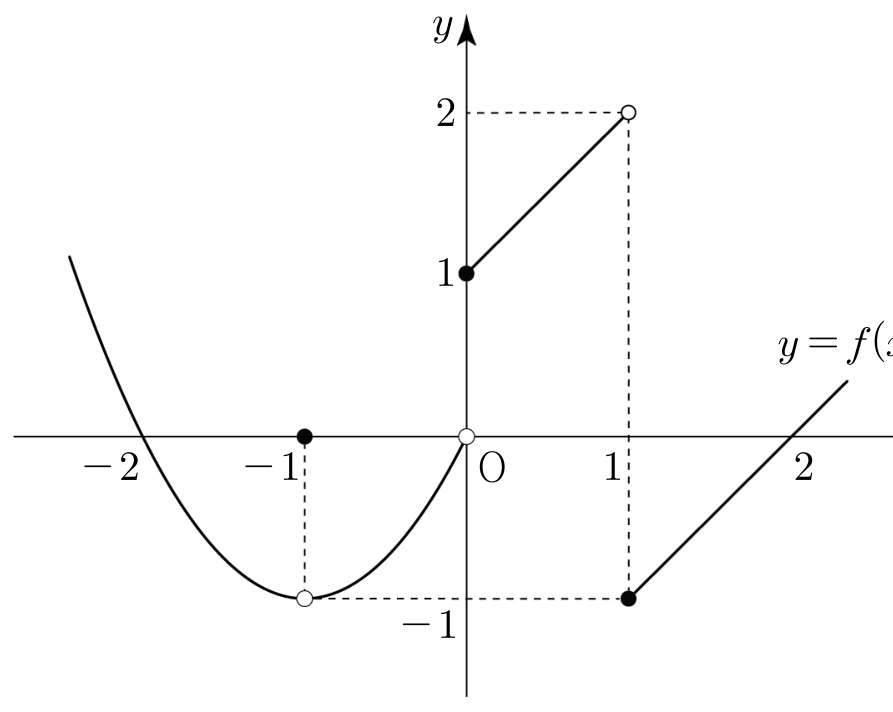

원본 (내부용)\(\frac{\pi}{2}<\theta<\pi\)인 \(\theta\)에 대하여 \(\sin\theta=-3\cos\theta\)일 때, \(\cos\theta\)의 값은? [3점]
① \(-\frac{3\sqrt{10}}{10}\)② \(-\frac{\sqrt{10}}{5}\)③ \(-\frac{\sqrt{10}}{10}\)④ \(\frac{\sqrt{10}}{10}\)⑤ \(\frac{\sqrt{10}}{5}\)
원본 정답 ③
원본 풀이 (내부용)[출제의도] 삼각함수 이해하기
그림에는 \(x,y\)축, 원점 \(O\), 중심이 원점이고 반지름이 \(\sqrt{10}\)인 원호, 각 \(\theta\)를 나타내는 동경이 표시되어 있다. 동경과 원호의 교점은 \(P(-1,3)\), \(P\)에서 \(x\)축으로 내린 수선의 발의 \(x\)좌표는 \(-1\)이고, 원의 왼쪽 \(x\)절편은 \(-\sqrt{10}\)이다.
\(
\sin\theta=-3\cos\theta\text{ 에서 }\frac{\sin\theta}{\cos\theta}=-3,\quad \tan\theta=-3
\)
\(
\frac{\pi}{2}<\theta<\pi
\)
중심이 원점이고 반지름의 길이가 \(\sqrt{10}\)인 원과 각 \(\theta\)를 나타내는 동경이 만나는 점을 \(P\)라 하면 \(P(-1,3)\).
따라서
\(
\cos\theta=-\frac1{\sqrt{10}}=-\frac{\sqrt{10}}{10}
\)
생성기 숫자판 1/6 · G2M9-05#4$\frac{\pi}{2}<\theta<\pi$인 $\theta$에 대하여 $\sin\theta=-2\cos\theta$일 때, $\cos\theta$의 값으로 옳은 것을 고르세요.
① $-\frac{2\sqrt{5}}{5}$② $-\frac{\sqrt{5}}{5}$③ $\frac{\sqrt{5}}{5}$④ $\frac{2\sqrt{5}}{5}$⑤ $\frac{3\sqrt{5}}{5}$
원본 (내부용)함수 \(y=f(x)\)의 그래프가 그림과 같다. $그림$ \(x<0\): 이차함수 모양 곡선이 \((-2,0)\)을 지나고 꼭짓점 \((-1,-1)\)은 빈 점, \(x=-1\)에서의 함숫값은 채운 점 \((-1,0)\), 곡선은 원점의 빈 점 \((0,0)\)으로 이어진다. \(0\le x<1\): 채운 점 \((0,1)\)에서 빈 점 \((1,2)\)까지 선분. \(x\ge1\): 채운 점 \((1,-1)\)에서 시작해 \((2,0)\)을 지나는 직선. 점선 \(x=-1,\ x=1,\ y=-1,\ y=2\). (원본 확대 직접 확인) \( \lim_{x\to-1}f(x)+\lim_{x\to1-}f(x) \) 의 값은? [3점]

① \(-2\)② \(-1\)③ \(0\)④ \(1\)⑤ \(2\)
원본 정답 ④
원본 풀이 (내부용)[출제의도] 함수의 극한 이해하기
\(
\lim_{x\to-1-}f(x)=-1,\quad \lim_{x\to-1+}f(x)=-1
\)
이므로
\(
\lim_{x\to-1}f(x)=-1
\)
\(
\lim_{x\to1-}f(x)=2
\)
따라서
\(
\lim_{x\to-1}f(x)+\lim_{x\to1-}f(x)=-1+2=1
\)
생성기 숫자판 1/6 · G2f-08#1함수 $y=f\left(x\right)$의 그래프가 그림과 같고, 두 경계의 $x$좌표가 $0$, $3$이며 각 경계의 좌우 극한값이 $(0,2)$, $(3,-2)$이고 채워진 두 점의 함수값이 $2$, $-2$일 때, $\lim_{x\to 0^{+}}f\left(x\right)-\lim_{x\to 3^{+}}f\left(x\right)$의 값으로 옮은 것을 고르세요.
① $2$② $3$③ $4$④ $5$⑤ $6$
정답③ $4$ $x\to 0^{+}$일 때 $f\left(x\right)\to 2$ $x\to 3^{+}$일 때 $f\left(x\right)\to -2$ 따라서 구하는 값은 $2-\left(-2\right)=4$
생성기 숫자판 2/6 · G2f-08#1함수 $y=f\left(x\right)$의 그래프가 그림과 같고, 두 경계의 $x$좌표가 $0$, $2$이며 각 경계의 좌우 극한값이 $(0,1)$, $(3,-2)$이고 채워진 두 점의 함수값이 $1$, $-2$일 때, $\lim_{x\to 0^{-}}f\left(x\right)+\lim_{x\to 2^{+}}f\left(x\right)$의 값으로 옮은 것을 고르세요.
① $-4$② $-3$③ $-2$④ $-1$⑤ $0$
정답③ $-2$ $x\to 0^{-}$일 때 $f\left(x\right)\to 0$ $x\to 2^{+}$일 때 $f\left(x\right)\to -2$ 따라서 구하는 값은 $0-2=-2$
생성기 숫자판 3/6 · G2f-08#1함수 $y=f\left(x\right)$의 그래프가 그림과 같고, 두 경계의 $x$좌표가 $0$, $1$이며 각 경계의 좌우 극한값이 $(0,2)$, $(3,-3)$이고 채워진 두 점의 함수값이 $2$, $-3$일 때, $\lim_{x\to 0^{+}}f\left(x\right)-\lim_{x\to 1^{-}}f\left(x\right)$의 값으로 옮은 것을 고르세요.
① $-3$② $-2$③ $-1$④ $0$⑤ $1$
정답③ $-1$ $x\to 0^{+}$일 때 $f\left(x\right)\to 2$ $x\to 1^{-}$일 때 $f\left(x\right)\to 3$ 따라서 구하는 값은 $2-3=-1$
생성기 숫자판 4/6 · G2f-08#1함수 $y=f\left(x\right)$의 그래프가 그림과 같고, 두 경계의 $x$좌표가 $0$, $1$이며 각 경계의 좌우 극한값이 $(0,2)$, $(3,-2)$이고 채워진 두 점의 함수값이 $2$, $-2$일 때, $\lim_{x\to 0^{+}}f\left(x\right)-\lim_{x\to 1^{-}}f\left(x\right)$의 값으로 옮은 것을 고르세요.
① $-3$② $-2$③ $-1$④ $0$⑤ $1$
정답③ $-1$ $x\to 0^{+}$일 때 $f\left(x\right)\to 2$ $x\to 1^{-}$일 때 $f\left(x\right)\to 3$ 따라서 구하는 값은 $2-3=-1$
생성기 숫자판 5/6 · G2f-08#1함수 $y=f\left(x\right)$의 그래프가 그림과 같고, 두 경계의 $x$좌표가 $0$, $3$이며 각 경계의 좌우 극한값이 $(0,1)$, $(3,-3)$이고 채워진 두 점의 함수값이 $1$, $-3$일 때, $\lim_{x\to 0^{-}}f\left(x\right)+\lim_{x\to 3^{+}}f\left(x\right)$의 값으로 옮은 것을 고르세요.
① $-5$② $-4$③ $-3$④ $-2$⑤ $-1$
정답③ $-3$ $x\to 0^{-}$일 때 $f\left(x\right)\to 0$ $x\to 3^{+}$일 때 $f\left(x\right)\to -3$ 따라서 구하는 값은 $0-3=-3$
생성기 숫자판 6/6 · G2f-08#1함수 $y=f\left(x\right)$의 그래프가 그림과 같고, 두 경계의 $x$좌표가 $0$, $3$이며 각 경계의 좌우 극한값이 $(0,2)$, $(3,-1)$이고 채워진 두 점의 함수값이 $2$, $-1$일 때, $\lim_{x\to 0^{+}}f\left(x\right)-\lim_{x\to 3^{-}}f\left(x\right)$의 값으로 옮은 것을 고르세요.
① $-3$② $-2$③ $-1$④ $0$⑤ $1$
정답③ $-1$ $x\to 0^{+}$일 때 $f\left(x\right)\to 2$ $x\to 3^{-}$일 때 $f\left(x\right)\to 3$ 따라서 구하는 값은 $2-3=-1$
생성기 숫자판 1/6 · G2M9-05#2$\lim_{x\to\infty}\frac{\left(x-2\right)^{2}}{x^{2}+5x+1}$의 값으로 옳은 것을 고르세요.
① $1$② $2$③ $3$④ $4$⑤ $5$
정답① $1$ 분모와 분자를 각각 $x^{2}$으로 나누면 $\lim_{x\to\infty}\frac{\left(x-2\right)^{2}}{x^{2}+5x+1}=\lim_{x\to\infty}\frac{\left(1-2\times\frac{1}{x}\right)^{2}}{1+5\times\frac{1}{x}+\frac{1}{x^{2}}}$ $=\frac{1^{2}}{1}=1$
숫자: 원본 2 5 5 3 2 16 3 → 쌍둥이 2 5 1 · 같은 수: 2 5
생성기 숫자판 2/6 · G2M9-05#2$\lim_{x\to\infty}\frac{\left(x-3\right)^{2}}{x^{2}+3x+4}$의 값으로 옳은 것을 고르세요.
① $1$② $2$③ $3$④ $4$⑤ $5$
정답① $1$ 분모와 분자를 각각 $x^{2}$으로 나누면 $\lim_{x\to\infty}\frac{\left(x-3\right)^{2}}{x^{2}+3x+4}=\lim_{x\to\infty}\frac{\left(1-3\times\frac{1}{x}\right)^{2}}{1+3\times\frac{1}{x}+4\times\frac{1}{x^{2}}}$ $=\frac{1^{2}}{1}=1$
숫자: 원본 2 5 5 3 2 16 3 → 쌍둥이 3 3 4 · 같은 수: 3
생성기 숫자판 3/6 · G2M9-05#2$\lim_{x\to\infty}\frac{\left(2x-2\right)^{2}}{x^{2}+x+2}$의 값으로 옳은 것을 고르세요.
① $3$② $4$③ $5$④ $6$⑤ $7$
정답② $4$ 분모와 분자를 각각 $x^{2}$으로 나누면 $\lim_{x\to\infty}\frac{\left(2x-2\right)^{2}}{x^{2}+x+2}=\lim_{x\to\infty}\frac{\left(2-2\times\frac{1}{x}\right)^{2}}{1+\frac{1}{x}+2\times\frac{1}{x^{2}}}$ $=\frac{2^{2}}{1}=4$
숫자: 원본 2 5 5 3 2 16 3 → 쌍둥이 2 2 2 · 같은 수: 2
생성기 숫자판 4/6 · G2M9-05#2$\lim_{x\to\infty}\frac{\left(2x+2\right)^{2}}{x^{2}-2x+7}$의 값으로 옳은 것을 고르세요.
① $3$② $4$③ $5$④ $6$⑤ $7$
정답② $4$ 분모와 분자를 각각 $x^{2}$으로 나누면 $\lim_{x\to\infty}\frac{\left(2x+2\right)^{2}}{x^{2}-2x+7}=\lim_{x\to\infty}\frac{\left(2+2\times\frac{1}{x}\right)^{2}}{1-2\times\frac{1}{x}+7\times\frac{1}{x^{2}}}$ $=\frac{2^{2}}{1}=4$
숫자: 원본 2 5 5 3 2 16 3 → 쌍둥이 2 2 2 7 · 같은 수: 2
생성기 숫자판 5/6 · G2M9-05#2$\lim_{x\to\infty}\frac{\left(3x+1\right)^{2}}{x^{2}+3x+2}$의 값으로 옳은 것을 고르세요.
① $6$② $7$③ $8$④ $9$⑤ $10$
정답④ $9$ 분모와 분자를 각각 $x^{2}$으로 나누면 $\lim_{x\to\infty}\frac{\left(3x+1\right)^{2}}{x^{2}+3x+2}=\lim_{x\to\infty}\frac{\left(3+\frac{1}{x}\right)^{2}}{1+3\times\frac{1}{x}+2\times\frac{1}{x^{2}}}$ $=\frac{3^{2}}{1}=9$
숫자: 원본 2 5 5 3 2 16 3 → 쌍둥이 3 1 3 2 · 같은 수: 2 3
생성기 숫자판 6/6 · G2M9-05#2$\lim_{x\to\infty}\frac{\left(3x+1\right)^{2}}{x^{2}+3x+1}$의 값으로 옳은 것을 고르세요.
① $6$② $7$③ $8$④ $9$⑤ $10$
정답④ $9$ 분모와 분자를 각각 $x^{2}$으로 나누면 $\lim_{x\to\infty}\frac{\left(3x+1\right)^{2}}{x^{2}+3x+1}=\lim_{x\to\infty}\frac{\left(3+\frac{1}{x}\right)^{2}}{1+3\times\frac{1}{x}+\frac{1}{x^{2}}}$ $=\frac{3^{2}}{1}=9$
숫자: 원본 2 5 5 3 2 16 3 → 쌍둥이 3 1 3 1 · 같은 수: 3
7. 2024년 9월 7번 · 3점 · 수학Ⅰ 삼각함수 · G2M9-04#6
원본 (내부용)중심각의 크기가 \(\frac{\pi}{4}\)이고 넓이가 \(18\pi\)인 부채꼴의 호의 길이는? [3점]
① \(2\pi\)② \(3\pi\)③ \(4\pi\)④ \(5\pi\)⑤ \(6\pi\)
원본 정답 ②
원본 풀이 (내부용)[출제의도] 일반각과 호도법 이해하기
부채꼴의 반지름의 길이를 \(r\), 중심각의 크기를 \(\theta\)라 하자.
\(
\theta=\frac{\pi}{4}
\)
이므로 부채꼴의 넓이는
\(
\frac12r^2\theta=\frac12r^2\times\frac\pi4=18\pi,\quad r=12
\)
따라서 부채꼴의 호의 길이는
\(
r\theta=12\times\frac\pi4=3\pi
\)
생성기 숫자판 1/6 · G2M9-04#6중심각의 크기가 $\frac{2}{3}\pi$이고 넓이가 $\frac{4}{3}\pi$인 부채꼴의 호의 길이로 옳은 것을 고르세요.
① $\frac{\pi}{3}$② $\frac{2}{3}\pi$③ $\pi$④ $\frac{4}{3}\pi$⑤ $\frac{5}{3}\pi$
정답④ $\frac{4}{3}\pi$ 반지름의 길이를 $r$라 하면 $S=\frac{1}{2}r^{2}\theta$이므로 $\frac{4}{3}\pi=\frac{1}{2}\times r^{2}\times \frac{2}{3}\pi$, $r^{2}=4$, $r=2$ 따라서 호의 길이는 $l=r\theta=2\times \frac{2}{3}\pi=\frac{4}{3}\pi$
숫자: 원본 4 18 → 쌍둥이 2 3 4 3 · 같은 수: 4
생성기 숫자판 2/6 · G2M9-04#6중심각의 크기가 $\frac{\pi}{6}$이고 넓이가 $\frac{16}{3}\pi$인 부채꼴의 호의 길이로 옳은 것을 고르세요.
① $\frac{4}{3}\pi$② $\frac{5}{3}\pi$③ $2\pi$④ $\frac{7}{3}\pi$⑤ $\frac{8}{3}\pi$
정답① $\frac{4}{3}\pi$ 반지름의 길이를 $r$라 하면 $S=\frac{1}{2}r^{2}\theta$이므로 $\frac{16}{3}\pi=\frac{1}{2}\times r^{2}\times \frac{\pi}{6}$, $r^{2}=64$, $r=8$ 따라서 호의 길이는 $l=r\theta=8\times \frac{\pi}{6}=\frac{4}{3}\pi$
숫자: 원본 4 18 → 쌍둥이 6 16 3
생성기 숫자판 3/6 · G2M9-04#6중심각의 크기가 $\frac{\pi}{6}$이고 넓이가 $\frac{4}{3}\pi$인 부채꼴의 호의 길이로 옳은 것을 고르세요.
① $\frac{\pi}{3}$② $\frac{2}{3}\pi$③ $\pi$④ $\frac{4}{3}\pi$⑤ $\frac{5}{3}\pi$
정답② $\frac{2}{3}\pi$ 반지름의 길이를 $r$라 하면 $S=\frac{1}{2}r^{2}\theta$이므로 $\frac{4}{3}\pi=\frac{1}{2}\times r^{2}\times \frac{\pi}{6}$, $r^{2}=16$, $r=4$ 따라서 호의 길이는 $l=r\theta=4\times \frac{\pi}{6}=\frac{2}{3}\pi$
숫자: 원본 4 18 → 쌍둥이 6 4 3 · 같은 수: 4
생성기 숫자판 4/6 · G2M9-04#6중심각의 크기가 $\frac{5}{6}\pi$이고 넓이가 $60\pi$인 부채꼴의 호의 길이로 옳은 것을 고르세요.
① $7\pi$② $8\pi$③ $9\pi$④ $10\pi$⑤ $11\pi$
정답④ $10\pi$ 반지름의 길이를 $r$라 하면 $S=\frac{1}{2}r^{2}\theta$이므로 $60\pi=\frac{1}{2}\times r^{2}\times \frac{5}{6}\pi$, $r^{2}=144$, $r=12$ 따라서 호의 길이는 $l=r\theta=12\times \frac{5}{6}\pi=10\pi$
숫자: 원본 4 18 → 쌍둥이 5 6 60
생성기 숫자판 5/6 · G2M9-04#6중심각의 크기가 $\frac{\pi}{3}$이고 넓이가 $\frac{50}{3}\pi$인 부채꼴의 호의 길이로 옳은 것을 고르세요.
① $3\pi$② $\frac{10}{3}\pi$③ $\frac{11}{3}\pi$④ $4\pi$⑤ $\frac{13}{3}\pi$
정답② $\frac{10}{3}\pi$ 반지름의 길이를 $r$라 하면 $S=\frac{1}{2}r^{2}\theta$이므로 $\frac{50}{3}\pi=\frac{1}{2}\times r^{2}\times \frac{\pi}{3}$, $r^{2}=100$, $r=10$ 따라서 호의 길이는 $l=r\theta=10\times \frac{\pi}{3}=\frac{10}{3}\pi$
숫자: 원본 4 18 → 쌍둥이 3 50 3
생성기 숫자판 6/6 · G2M9-04#6중심각의 크기가 $\frac{\pi}{2}$이고 넓이가 $36\pi$인 부채꼴의 호의 길이로 옳은 것을 고르세요.
① $5\pi$② $6\pi$③ $7\pi$④ $8\pi$⑤ $9\pi$
정답② $6\pi$ 반지름의 길이를 $r$라 하면 $S=\frac{1}{2}r^{2}\theta$이므로 $36\pi=\frac{1}{2}\times r^{2}\times \frac{\pi}{2}$, $r^{2}=144$, $r=12$ 따라서 호의 길이는 $l=r\theta=12\times \frac{\pi}{2}=6\pi$
숫자: 원본 4 18 → 쌍둥이 2 36
8. 2024년 9월 8번 · 3점 · 수학Ⅰ 삼각함수 · G2M9-05#6
원본 (내부용)\(0<x\le 2\pi\)일 때, 방정식 \( \cos^2x-1=2\sin x \) 의 모든 해의 합은? [3점]
① \(\frac{3}{2}\pi\)② \(2\pi\)③ \(\frac{5}{2}\pi\)④ \(3\pi\)⑤ \(\frac{7}{2}\pi\)
원본 정답 ④
원본 풀이 (내부용)[출제의도] 삼각함수가 포함된 방정식 이해하기
\(
\sin^2x+\cos^2x=1
\)
이므로 \(\cos^2x-1=2\sin x\)에서
\(
(1-\sin^2x)-1=2\sin x
\)
\(
\sin^2x+2\sin x=0,\quad \sin x(\sin x+2)=0
\)
\(
-1\le\sin x\le1
\)
이므로 \(\sin x=0\).
\(
0<x<2\pi
\)
에서 \(x=\pi\) 또는 \(x=2\pi\).
따라서 모든 해의 합은 \(3\pi\).
생성기 숫자판 1/6 · G2M9-05#6$0\le x< 2\pi$일 때, 방정식 $\cos^{2}x-1=-2\sin x$의 모든 해의 합으로 옳은 것을 고르세요.
① $\frac{\pi}{2}$② $\pi$③ $\frac{3}{2}\pi$④ $2\pi$⑤ $\frac{5}{2}\pi$
정답② $\pi$ $\cos^{2}x-1=-\sin^{2}x$이므로 $-\sin^{2}x=-2\sin x$, $\sin x\left(\sin x-2\right)=0$ $-1\le \sin x\le 1$이므로 $\sin x-2\ne 0$, 곧 $\sin x=0$ $0\le x< 2\pi$에서 $x=0$ 또는 $x=\pi$ 따라서 모든 해의 합은 $\pi$
숫자: 원본 0 2 1 2 → 쌍둥이 0 2 1 2 · 같은 수: 0 1 2
생성기 숫자판 2/6 · G2M9-05#6$0\le x< 2\pi$일 때, 방정식 $\cos^{2}x-1=3\sin x$의 모든 해의 합으로 옳은 것을 고르세요.
① $\frac{\pi}{2}$② $\pi$③ $\frac{3}{2}\pi$④ $2\pi$⑤ $\frac{5}{2}\pi$
정답② $\pi$ $\cos^{2}x-1=-\sin^{2}x$이므로 $-\sin^{2}x=3\sin x$, $\sin x\left(\sin x+3\right)=0$ $-1\le \sin x\le 1$이므로 $\sin x+3\ne 0$, 곧 $\sin x=0$ $0\le x< 2\pi$에서 $x=0$ 또는 $x=\pi$ 따라서 모든 해의 합은 $\pi$
숫자: 원본 0 2 1 2 → 쌍둥이 0 2 1 3 · 같은 수: 0 1 2
생성기 숫자판 3/6 · G2M9-05#6$0< x\le 4\pi$일 때, 방정식 $\cos^{2}x-1=-2\sin x$의 모든 해의 합으로 옳은 것을 고르세요.
① $8\pi$② $\frac{17}{2}\pi$③ $9\pi$④ $\frac{19}{2}\pi$⑤ $10\pi$
정답⑤ $10\pi$ $\cos^{2}x-1=-\sin^{2}x$이므로 $-\sin^{2}x=-2\sin x$, $\sin x\left(\sin x-2\right)=0$ $-1\le \sin x\le 1$이므로 $\sin x-2\ne 0$, 곧 $\sin x=0$ $0< x\le 4\pi$에서 $x=\pi$ 또는 $x=2\pi$ 또는 $x=3\pi$ 또는 $x=4\pi$ 따라서 모든 해의 합은 $10\pi$
숫자: 원본 0 2 1 2 → 쌍둥이 0 4 1 2 · 같은 수: 0 1 2
생성기 숫자판 4/6 · G2M9-05#6$0\le x< 3\pi$일 때, 방정식 $\cos^{2}x-1=-2\sin x$의 모든 해의 합으로 옳은 것을 고르세요.
① $\frac{3}{2}\pi$② $2\pi$③ $\frac{5}{2}\pi$④ $3\pi$⑤ $\frac{7}{2}\pi$
정답④ $3\pi$ $\cos^{2}x-1=-\sin^{2}x$이므로 $-\sin^{2}x=-2\sin x$, $\sin x\left(\sin x-2\right)=0$ $-1\le \sin x\le 1$이므로 $\sin x-2\ne 0$, 곧 $\sin x=0$ $0\le x< 3\pi$에서 $x=0$ 또는 $x=\pi$ 또는 $x=2\pi$ 따라서 모든 해의 합은 $3\pi$
숫자: 원본 0 2 1 2 → 쌍둥이 0 3 1 2 · 같은 수: 0 1 2
생성기 숫자판 5/6 · G2M9-05#6$0< x\le 4\pi$일 때, 방정식 $\cos^{2}x-1=3\sin x$의 모든 해의 합으로 옳은 것을 고르세요.
① $\frac{17}{2}\pi$② $9\pi$③ $\frac{19}{2}\pi$④ $10\pi$⑤ $\frac{21}{2}\pi$
정답④ $10\pi$ $\cos^{2}x-1=-\sin^{2}x$이므로 $-\sin^{2}x=3\sin x$, $\sin x\left(\sin x+3\right)=0$ $-1\le \sin x\le 1$이므로 $\sin x+3\ne 0$, 곧 $\sin x=0$ $0< x\le 4\pi$에서 $x=\pi$ 또는 $x=2\pi$ 또는 $x=3\pi$ 또는 $x=4\pi$ 따라서 모든 해의 합은 $10\pi$
숫자: 원본 0 2 1 2 → 쌍둥이 0 4 1 3 · 같은 수: 0 1
생성기 숫자판 6/6 · G2M9-05#6$0\le x< 2\pi$일 때, 방정식 $\cos^{2}x-1=4\sin x$의 모든 해의 합으로 옳은 것을 고르세요.
① $\frac{\pi}{2}$② $\pi$③ $\frac{3}{2}\pi$④ $2\pi$⑤ $\frac{5}{2}\pi$
정답② $\pi$ $\cos^{2}x-1=-\sin^{2}x$이므로 $-\sin^{2}x=4\sin x$, $\sin x\left(\sin x+4\right)=0$ $-1\le \sin x\le 1$이므로 $\sin x+4\ne 0$, 곧 $\sin x=0$ $0\le x< 2\pi$에서 $x=0$ 또는 $x=\pi$ 따라서 모든 해의 합은 $\pi$
숫자: 원본 0 2 1 2 → 쌍둥이 0 2 1 4 · 같은 수: 0 1 2
9. 2024년 9월 9번 · 3점 · 수학Ⅰ 지수·로그 · G2M9-05#7
원본 (내부용)집합 \(\{x\mid -3\le x\le 3\}\)에서 정의된 함수 \( y=\log_{\frac13}(x+m) \) 이 최댓값 \(-2\)를 가질 때, 상수 \(m\)의 값은? [3점]
① \(11\)② \(12\)③ \(13\)④ \(14\)⑤ \(15\)
원본 정답 ②
원본 풀이 (내부용)[출제의도] 지수함수와 로그함수 이해하기
함수 \(y=\log_{\frac13}(x+m)\)은 \(x\)의 값이 증가할 때 \(y\)의 값은 감소하므로 \(x=-3\)에서 최댓값 \(-2\)를 갖는다.
\(
\log_{\frac13}(-3+m)=-2,\quad m-3=9
\)
따라서 \(m=12\).
생성기 숫자판 1/6 · G2M9-05#7집합 $\left\{x\mid -2\le x\le 3\right\}$에서 정의된 함수 $y=\log_{\frac{1}{2}}\left(x+m\right)$이 최댓값 $-2$를 가질 때, 상수 $m$의 값으로 옳은 것을 고르세요.
① $3$② $4$③ $5$④ $6$⑤ $7$
정답④ $6$ 밑 $\frac{1}{2}$이 $0$보다 크고 $1$보다 작으므로 $x$의 값이 커질수록 $y$의 값은 작아집니다. 따라서 $x=-2$일 때 최댓값 $\log_{\frac{1}{2}}\left(m-2\right)$를 가지므로 $\log_{\frac{1}{2}}\left(m-2\right)=-2$ $m-2=\left(\frac{1}{2}\right)^{-2}=4$ 따라서 $m=6$
숫자: 원본 3 3 13 2 → 쌍둥이 2 3 1 2 2 · 같은 수: 2 3
생성기 숫자판 2/6 · G2M9-05#7집합 $\left\{x\mid -4\le x\le 1\right\}$에서 정의된 함수 $y=\log_{\frac{1}{3}}\left(x+m\right)$이 최댓값 $-2$를 가질 때, 상수 $m$의 값으로 옳은 것을 고르세요.
① $12$② $13$③ $14$④ $15$⑤ $16$
정답② $13$ 밑 $\frac{1}{3}$이 $0$보다 크고 $1$보다 작으므로 $x$의 값이 커질수록 $y$의 값은 작아집니다. 따라서 $x=-4$일 때 최댓값 $\log_{\frac{1}{3}}\left(m-4\right)$를 가지므로 $\log_{\frac{1}{3}}\left(m-4\right)=-2$ $m-4=\left(\frac{1}{3}\right)^{-2}=9$ 따라서 $m=13$
숫자: 원본 3 3 13 2 → 쌍둥이 4 1 1 3 2 · 같은 수: 2 3
생성기 숫자판 3/6 · G2M9-05#7집합 $\left\{x\mid -3\le x\le 5\right\}$에서 정의된 함수 $y=\log_{\frac{1}{2}}\left(x+m\right)$이 최댓값 $-1$을 가질 때, 상수 $m$의 값으로 옳은 것을 고르세요.
① $3$② $4$③ $5$④ $6$⑤ $7$
정답③ $5$ 밑 $\frac{1}{2}$이 $0$보다 크고 $1$보다 작으므로 $x$의 값이 커질수록 $y$의 값은 작아집니다. 따라서 $x=-3$일 때 최댓값 $\log_{\frac{1}{2}}\left(m-3\right)$을 가지므로 $\log_{\frac{1}{2}}\left(m-3\right)=-1$ $m-3=\left(\frac{1}{2}\right)^{-1}=2$ 따라서 $m=5$
숫자: 원본 3 3 13 2 → 쌍둥이 3 5 1 2 1 · 같은 수: 2 3
생성기 숫자판 4/6 · G2M9-05#7집합 $\left\{x\mid -2\le x\le 4\right\}$에서 정의된 함수 $y=\log_{\frac{1}{2}}\left(x+m\right)$이 최댓값 $-3$을 가질 때, 상수 $m$의 값으로 옳은 것을 고르세요.
① $9$② $10$③ $11$④ $12$⑤ $13$
정답② $10$ 밑 $\frac{1}{2}$이 $0$보다 크고 $1$보다 작으므로 $x$의 값이 커질수록 $y$의 값은 작아집니다. 따라서 $x=-2$일 때 최댓값 $\log_{\frac{1}{2}}\left(m-2\right)$를 가지므로 $\log_{\frac{1}{2}}\left(m-2\right)=-3$ $m-2=\left(\frac{1}{2}\right)^{-3}=8$ 따라서 $m=10$
숫자: 원본 3 3 13 2 → 쌍둥이 2 4 1 2 3 · 같은 수: 2 3
생성기 숫자판 5/6 · G2M9-05#7집합 $\left\{x\mid -3\le x\le 3\right\}$에서 정의된 함수 $y=\log_{\frac{1}{2}}\left(x+m\right)$이 최댓값 $-2$를 가질 때, 상수 $m$의 값으로 옳은 것을 고르세요.
① $3$② $4$③ $5$④ $6$⑤ $7$
정답⑤ $7$ 밑 $\frac{1}{2}$이 $0$보다 크고 $1$보다 작으므로 $x$의 값이 커질수록 $y$의 값은 작아집니다. 따라서 $x=-3$일 때 최댓값 $\log_{\frac{1}{2}}\left(m-3\right)$을 가지므로 $\log_{\frac{1}{2}}\left(m-3\right)=-2$ $m-3=\left(\frac{1}{2}\right)^{-2}=4$ 따라서 $m=7$
숫자: 원본 3 3 13 2 → 쌍둥이 3 3 1 2 2 · 같은 수: 2 3
생성기 숫자판 6/6 · G2M9-05#7집합 $\left\{x\mid -1\le x\le 4\right\}$에서 정의된 함수 $y=\log_{\frac{1}{3}}\left(x+m\right)$이 최댓값 $-1$을 가질 때, 상수 $m$의 값으로 옳은 것을 고르세요.
① $4$② $5$③ $6$④ $7$⑤ $8$
정답① $4$ 밑 $\frac{1}{3}$이 $0$보다 크고 $1$보다 작으므로 $x$의 값이 커질수록 $y$의 값은 작아집니다. 따라서 $x=-1$일 때 최댓값 $\log_{\frac{1}{3}}\left(m-1\right)$을 가지므로 $\log_{\frac{1}{3}}\left(m-1\right)=-1$ $m-1=\left(\frac{1}{3}\right)^{-1}=3$ 따라서 $m=4$
숫자: 원본 3 3 13 2 → 쌍둥이 1 4 1 3 1 · 같은 수: 3
10. 2024년 9월 10번 · 3점 · 수학Ⅰ 수열 · G2M9-05#8
원본 (내부용)공비가 양수인 등비수열 \(\{a_n\}\)의 첫째항부터 제 \(n\)항까지의 합을 \(S_n\)이라 하자. \( a_2=2,\qquad S_6=9S_3 \) 일 때, \(a_4\)의 값은? [3점]
① \(6\)② \(8\)③ \(10\)④ \(12\)⑤ \(14\)
원본 정답 ②
원본 풀이 (내부용)[출제의도] 등비수열의 합 이해하기
등비수열 \(\{a_n\}\)의 첫째항을 \(a\), 공비를 \(r\;(r>0)\)이라 하자.
(i) \(r=1\)인 경우
\(
a_2=ar=a=2,\quad S_6=6a=12
\)
\(
S_3=3a=6,\quad S_6\ne9S_3
\)
(ii) \(r\ne1\)인 경우
\(
S_6=9S_3,\quad \frac{a(r^6-1)}{r-1}
=9\times\frac{a(r^3-1)}{r-1}
\)
\(
(r^3+1)(r^3-1)=9(r^3-1)
\)
\(
r^3+1=9,\quad r^3=8,\quad r=2
\)
따라서
\(
a_4=a_2\times r^2=2\times2^2=8
\)
원본 (내부용)\(x\)에 대한 연립부등식 \( \begin{cases} 4^x-2^x-2<0\\ \log_a x+1>0 \end{cases} \) 을 만족시키는 모든 \(x\)의 값의 범위가 \(\frac15<x<b\)일 때, 두 상수 \(a,b\)에 대하여 \(a+b\)의 값은? (단, \(a>1\)) [3점]
① \(6\)② \(7\)③ \(8\)④ \(9\)⑤ \(10\)
원본 정답 ①
원본 풀이 (내부용)[출제의도] 지수함수와 로그함수 이해하기
\(
4^x-2^x-2<0
\)
에서 \(2^x=t\;(t>0)\)라 하면
\(
t^2-t-2<0,\quad (t+1)(t-2)<0
\)
\(
-1<t<2
\)
에서 \(0<t<2\).
\(
0<2^x<2,\quad x<1
\)
\(
\log_a x+1>0
\)
에서 \(a>1\)이므로 \(x>\frac1a\).
그림은 수직선에서 \(\frac1a\)와 \(1\)을 양 끝점으로 하는 열린 구간을 나타낸다. 연립부등식을 만족시키는 모든 \(x\)의 값의 범위가
\(
\frac15<x<b
\)
이므로 \(a=5,\ b=1\).
따라서 \(a+b=5+1=6\).
생성기 숫자판 1/6 · G2M9-06#0$x$에 대한 연립부등식 $\begin{cases}4^{x}-7\times 2^{x}-8<0\\\log_{a}x+1>0\end{cases}$을 만족시키는 모든 $x$의 값의 범위가 $\frac{1}{6}<x<b$일 때, 두 상수 $a$, $b$에 대하여 $a+b$의 값으로 옳은 것을 고르세요. (단, $a>1$)
① $6$② $7$③ $8$④ $9$⑤ $10$
정답④ $9$ $2^{x}=t\ \left(t>0\right)$라 하면 $t^{2}-7t-8<0$ $\left(t+1\right)\left(t-8\right)<0$에서 $-1<t<8$이고 $t>0$이므로 $0<2^{x}<8$, $x<3$ $\log_{a}x+1>0$에서 $\log_{a}x>-1$이고 $a>1$이므로 $x>\frac{1}{a}$ 해가 $\frac{1}{6}<x<b$이므로 $a=6$, $b=3$ 따라서 $a+b=9$
생성기 숫자판 2/6 · G2M9-06#0$x$에 대한 연립부등식 $\begin{cases}4^{x}-3\times 2^{x}-4<0\\\log_{a}x+1>0\end{cases}$을 만족시키는 모든 $x$의 값의 범위가 $\frac{1}{4}<x<b$일 때, 두 상수 $a$, $b$에 대하여 $a+b$의 값으로 옳은 것을 고르세요. (단, $a>1$)
① $3$② $4$③ $5$④ $6$⑤ $7$
정답④ $6$ $2^{x}=t\ \left(t>0\right)$라 하면 $t^{2}-3t-4<0$ $\left(t+1\right)\left(t-4\right)<0$에서 $-1<t<4$이고 $t>0$이므로 $0<2^{x}<4$, $x<2$ $\log_{a}x+1>0$에서 $\log_{a}x>-1$이고 $a>1$이므로 $x>\frac{1}{a}$ 해가 $\frac{1}{4}<x<b$이므로 $a=4$, $b=2$ 따라서 $a+b=6$
생성기 숫자판 3/6 · G2M9-06#0$x$에 대한 연립부등식 $\begin{cases}4^{x}-7\times 2^{x}-8<0\\\log_{a}x+1>0\end{cases}$을 만족시키는 모든 $x$의 값의 범위가 $\frac{1}{3}<x<b$일 때, 두 상수 $a$, $b$에 대하여 $a+b$의 값으로 옳은 것을 고르세요. (단, $a>1$)
① $5$② $6$③ $7$④ $8$⑤ $9$
정답② $6$ $2^{x}=t\ \left(t>0\right)$라 하면 $t^{2}-7t-8<0$ $\left(t+1\right)\left(t-8\right)<0$에서 $-1<t<8$이고 $t>0$이므로 $0<2^{x}<8$, $x<3$ $\log_{a}x+1>0$에서 $\log_{a}x>-1$이고 $a>1$이므로 $x>\frac{1}{a}$ 해가 $\frac{1}{3}<x<b$이므로 $a=3$, $b=3$ 따라서 $a+b=6$
생성기 숫자판 4/6 · G2M9-06#0$x$에 대한 연립부등식 $\begin{cases}4^{x}-2\times 2^{x}-8<0\\\log_{a}x+1>0\end{cases}$을 만족시키는 모든 $x$의 값의 범위가 $\frac{1}{7}<x<b$일 때, 두 상수 $a$, $b$에 대하여 $a+b$의 값으로 옳은 것을 고르세요. (단, $a>1$)
① $7$② $8$③ $9$④ $10$⑤ $11$
정답③ $9$ $2^{x}=t\ \left(t>0\right)$라 하면 $t^{2}-2t-8<0$ $\left(t+2\right)\left(t-4\right)<0$에서 $-2<t<4$이고 $t>0$이므로 $0<2^{x}<4$, $x<2$ $\log_{a}x+1>0$에서 $\log_{a}x>-1$이고 $a>1$이므로 $x>\frac{1}{a}$ 해가 $\frac{1}{7}<x<b$이므로 $a=7$, $b=2$ 따라서 $a+b=9$
생성기 숫자판 5/6 · G2M9-06#0$x$에 대한 연립부등식 $\begin{cases}4^{x}-2^{x}-12<0\\\log_{a}x+1>0\end{cases}$을 만족시키는 모든 $x$의 값의 범위가 $\frac{1}{5}<x<b$일 때, 두 상수 $a$, $b$에 대하여 $a+b$의 값으로 옳은 것을 고르세요. (단, $a>1$)
① $3$② $4$③ $5$④ $6$⑤ $7$
정답⑤ $7$ $2^{x}=t\ \left(t>0\right)$라 하면 $t^{2}-t-12<0$ $\left(t+3\right)\left(t-4\right)<0$에서 $-3<t<4$이고 $t>0$이므로 $0<2^{x}<4$, $x<2$ $\log_{a}x+1>0$에서 $\log_{a}x>-1$이고 $a>1$이므로 $x>\frac{1}{a}$ 해가 $\frac{1}{5}<x<b$이므로 $a=5$, $b=2$ 따라서 $a+b=7$
생성기 숫자판 6/6 · G2M9-06#0$x$에 대한 연립부등식 $\begin{cases}4^{x}-5\times 2^{x}-24<0\\\log_{a}x+1>0\end{cases}$을 만족시키는 모든 $x$의 값의 범위가 $\frac{1}{6}<x<b$일 때, 두 상수 $a$, $b$에 대하여 $a+b$의 값으로 옳은 것을 고르세요. (단, $a>1$)
① $5$② $6$③ $7$④ $8$⑤ $9$
정답⑤ $9$ $2^{x}=t\ \left(t>0\right)$라 하면 $t^{2}-5t-24<0$ $\left(t+3\right)\left(t-8\right)<0$에서 $-3<t<8$이고 $t>0$이므로 $0<2^{x}<8$, $x<3$ $\log_{a}x+1>0$에서 $\log_{a}x>-1$이고 $a>1$이므로 $x>\frac{1}{a}$ 해가 $\frac{1}{6}<x<b$이므로 $a=6$, $b=3$ 따라서 $a+b=9$
원본 (내부용)함수 \(f(x)=a\tan\frac{\pi}{4}x\)에 대하여 함수 \(y=f(x)\)의 그래프 위의 점 \(A(3,-2)\)를 \(x\)축의 방향으로 \(6\)만큼, \(y\)축의 방향으로 \(b\)만큼 평행이동한 점을 \(A'\)이라 하자. 점 \(A'\)이 함수 \(y=f(x)\)의 그래프 위의 점일 때, \(a+b\)의 값은? (단, \(a,b\)는 상수이다.) [3점]
① \(4\)② \(6\)③ \(8\)④ \(10\)⑤ \(12\)
원본 정답 ②
원본 풀이 (내부용)[출제의도] 삼각함수를 활용하여 문제 해결하기
그림에는 \(x,y\)축과 원점 \(O\), \(y=f(x)\)의 주기적인 곡선, 점 \(A(3,-2)\), 점 \(A'(9,-2+b)\)가 표시되어 있다. \(A\)와 \(A'\)의 \(x\)좌표 차는 \(6\)이다.
점 \(A(3,-2)\)는 함수
\(
f(x)=a\tan\frac{\pi}{4}x
\)
의 그래프 위의 점이므로
\(
f(3)=a\tan\frac{3\pi}{4}=-a=-2,\quad a=2
\)
점 \(A(3,-2)\)를 \(x\)축의 방향으로 \(6\)만큼, \(y\)축의 방향으로 \(b\)만큼 평행이동하면 점 \(A'(9,-2+b)\)이다. 점 \(A'(9,-2+b)\)는 함수 \(f(x)=2\tan\frac{\pi}{4}x\)의 그래프 위의 점이므로
\(
\begin{aligned}
f(9)&=2\tan\frac{9\pi}{4}
=2\tan\left(2\pi+\frac\pi4\right)\\
&=2\tan\frac\pi4=2\times1=2=-2+b,\quad b=4
\end{aligned}
\)
따라서 \(a+b=2+4=6\).
생성기 숫자판 1/6 · G2M9-06#1함수 $f\left(x\right)=a\tan\frac{\pi}{8}x$에 대하여 함수 $y=f\left(x\right)$의 그래프 위의 점 $\mathrm{A}\left(10,\ 4\right)$를 $x$축의 방향으로 $4$만큼, $y$축의 방향으로 $b$만큼 평행이동한 점을 $\mathrm{A}^{\prime}$이라 합시다. 점 $\mathrm{A}^{\prime}$이 함수 $y=f\left(x\right)$의 그래프 위의 점일 때, $a+b$의 값으로 옳은 것을 고르세요. (단, $a$, $b$는 상수입니다.)
① $-4$② $-2$③ $0$④ $2$⑤ $4$
정답① $-4$ 점 $\mathrm{A}\left(10,\ 4\right)$가 그래프 위의 점이므로 $f\left(10\right)=a\tan\frac{5}{4}\pi=a=4$, $a=4$ 점 $\mathrm{A}^{\prime}\left(14,\ 4+b\right)$가 함수 $y=4\tan\frac{\pi}{8}x$의 그래프 위의 점이므로 $f\left(14\right)=4\tan\frac{7}{4}\pi=-4=4+b$, $b=-8$ 따라서 $a+b=-4$
숫자: 원본 4 3 2 6 → 쌍둥이 8 10 4 4 · 같은 수: 4
생성기 숫자판 2/6 · G2M9-06#1함수 $f\left(x\right)=a\tan\frac{\pi}{8}x$에 대하여 함수 $y=f\left(x\right)$의 그래프 위의 점 $\mathrm{A}\left(2,\ 3\right)$을 $x$축의 방향으로 $12$만큼, $y$축의 방향으로 $b$만큼 평행이동한 점을 $\mathrm{A}^{\prime}$이라 합시다. 점 $\mathrm{A}^{\prime}$이 함수 $y=f\left(x\right)$의 그래프 위의 점일 때, $a+b$의 값으로 옳은 것을 고르세요. (단, $a$, $b$는 상수입니다.)
① $-3$② $-1$③ $1$④ $3$⑤ $5$
정답① $-3$ 점 $\mathrm{A}\left(2,\ 3\right)$이 그래프 위의 점이므로 $f\left(2\right)=a\tan\frac{\pi}{4}=a=3$, $a=3$ 점 $\mathrm{A}^{\prime}\left(14,\ 3+b\right)$가 함수 $y=3\tan\frac{\pi}{8}x$의 그래프 위의 점이므로 $f\left(14\right)=3\tan\frac{7}{4}\pi=-3=3+b$, $b=-6$ 따라서 $a+b=-3$
숫자: 원본 4 3 2 6 → 쌍둥이 8 2 3 12 · 같은 수: 2 3
생성기 숫자판 3/6 · G2M9-06#1함수 $f\left(x\right)=a\tan\frac{\pi}{8}x$에 대하여 함수 $y=f\left(x\right)$의 그래프 위의 점 $\mathrm{A}\left(14,\ -3\right)$을 $x$축의 방향으로 $12$만큼, $y$축의 방향으로 $b$만큼 평행이동한 점을 $\mathrm{A}^{\prime}$이라 합시다. 점 $\mathrm{A}^{\prime}$이 함수 $y=f\left(x\right)$의 그래프 위의 점일 때, $a+b$의 값으로 옳은 것을 고르세요. (단, $a$, $b$는 상수입니다.)
① $5$② $7$③ $9$④ $11$⑤ $13$
정답③ $9$ 점 $\mathrm{A}\left(14,\ -3\right)$이 그래프 위의 점이므로 $f\left(14\right)=a\tan\frac{7}{4}\pi=-a=-3$, $a=3$ 점 $\mathrm{A}^{\prime}\left(26,\ -3+b\right)$가 함수 $y=3\tan\frac{\pi}{8}x$의 그래프 위의 점이므로 $f\left(26\right)=3\tan\frac{13}{4}\pi=3=-3+b$, $b=6$ 따라서 $a+b=9$
숫자: 원본 4 3 2 6 → 쌍둥이 8 14 3 12 · 같은 수: 3
생성기 숫자판 4/6 · G2M9-06#1함수 $f\left(x\right)=a\tan\frac{\pi}{12}x$에 대하여 함수 $y=f\left(x\right)$의 그래프 위의 점 $\mathrm{A}\left(3,\ 3\right)$을 $x$축의 방향으로 $18$만큼, $y$축의 방향으로 $b$만큼 평행이동한 점을 $\mathrm{A}^{\prime}$이라 합시다. 점 $\mathrm{A}^{\prime}$이 함수 $y=f\left(x\right)$의 그래프 위의 점일 때, $a+b$의 값으로 옳은 것을 고르세요. (단, $a$, $b$는 상수입니다.)
① $-11$② $-9$③ $-7$④ $-5$⑤ $-3$
정답⑤ $-3$ 점 $\mathrm{A}\left(3,\ 3\right)$이 그래프 위의 점이므로 $f\left(3\right)=a\tan\frac{\pi}{4}=a=3$, $a=3$ 점 $\mathrm{A}^{\prime}\left(21,\ 3+b\right)$가 함수 $y=3\tan\frac{\pi}{12}x$의 그래프 위의 점이므로 $f\left(21\right)=3\tan\frac{7}{4}\pi=-3=3+b$, $b=-6$ 따라서 $a+b=-3$
숫자: 원본 4 3 2 6 → 쌍둥이 12 3 3 18 · 같은 수: 3
생성기 숫자판 5/6 · G2M9-06#1함수 $f\left(x\right)=a\tan\frac{\pi}{4}x$에 대하여 함수 $y=f\left(x\right)$의 그래프 위의 점 $\mathrm{A}\left(7,\ -2\right)$를 $x$축의 방향으로 $2$만큼, $y$축의 방향으로 $b$만큼 평행이동한 점을 $\mathrm{A}^{\prime}$이라 합시다. 점 $\mathrm{A}^{\prime}$이 함수 $y=f\left(x\right)$의 그래프 위의 점일 때, $a+b$의 값으로 옳은 것을 고르세요. (단, $a$, $b$는 상수입니다.)
① $4$② $6$③ $8$④ $10$⑤ $12$
정답② $6$ 점 $\mathrm{A}\left(7,\ -2\right)$가 그래프 위의 점이므로 $f\left(7\right)=a\tan\frac{7}{4}\pi=-a=-2$, $a=2$ 점 $\mathrm{A}^{\prime}\left(9,\ -2+b\right)$가 함수 $y=2\tan\frac{\pi}{4}x$의 그래프 위의 점이므로 $f\left(9\right)=2\tan\frac{9}{4}\pi=2=-2+b$, $b=4$ 따라서 $a+b=6$
숫자: 원본 4 3 2 6 → 쌍둥이 4 7 2 2 · 같은 수: 2 4
생성기 숫자판 6/6 · G2M9-06#1함수 $f\left(x\right)=a\tan\frac{\pi}{12}x$에 대하여 함수 $y=f\left(x\right)$의 그래프 위의 점 $\mathrm{A}\left(21,\ -2\right)$를 $x$축의 방향으로 $18$만큼, $y$축의 방향으로 $b$만큼 평행이동한 점을 $\mathrm{A}^{\prime}$이라 합시다. 점 $\mathrm{A}^{\prime}$이 함수 $y=f\left(x\right)$의 그래프 위의 점일 때, $a+b$의 값으로 옳은 것을 고르세요. (단, $a$, $b$는 상수입니다.)
① $4$② $6$③ $8$④ $10$⑤ $12$
정답② $6$ 점 $\mathrm{A}\left(21,\ -2\right)$가 그래프 위의 점이므로 $f\left(21\right)=a\tan\frac{7}{4}\pi=-a=-2$, $a=2$ 점 $\mathrm{A}^{\prime}\left(39,\ -2+b\right)$가 함수 $y=2\tan\frac{\pi}{12}x$의 그래프 위의 점이므로 $f\left(39\right)=2\tan\frac{13}{4}\pi=2=-2+b$, $b=4$ 따라서 $a+b=6$
숫자: 원본 4 3 2 6 → 쌍둥이 12 21 2 18 · 같은 수: 2
13. 2024년 9월 13번 · 3점 · 수학Ⅰ 수열 · G2M9-06#2
원본 (내부용)첫째항이 음수인 등비수열 \(\{a_n\}\)에 대하여 \( a_3a_5=8a_8,\qquad a_1+|a_2|+|2a_3|=0 \) 일 때, \(a_2\)의 값은? [3점]
① \(-1\)② \(-\frac12\)③ \(\frac12\)④ \(1\)⑤ \(2\)
원본 정답 ⑤
원본 풀이 (내부용)[출제의도] 등비수열 이해하기
등비수열 \(\{a_n\}\)의 첫째항을 \(a\;(a<0)\), 공비를 \(r\;(r\ne0)\)이라 하자.
\(
a_3a_5=8a_8
\)
에서
\(
ar^2\times ar^4=8ar^7,\quad a=8r<0,\quad r<0
\)
모든 자연수 \(n\)에 대하여
\(
a_n=8r\times r^{n-1}=8r^n
\)
\(
a_2=8r^2>0,\quad a_3=8r^3<0
\)
이므로
\(
\begin{aligned}
a_1+|a_2|+|2a_3|
&=a_1+a_2-2a_3\\
&=8r+8r^2-16r^3=0
\end{aligned}
\)
\(
2r^2-r-1=0,\quad (2r+1)(r-1)=0
\)
\(
r=-\frac12\text{ 또는 }r=1
\)
\(r<0\)이므로 \(r=-\frac12\).
따라서
\(
a_2=8r^2=8\times\left(-\frac12\right)^2=2
\)
생성기 숫자판 1/6 · G2M9-06#2첫째항이 음수인 등비수열 $\left\{a_{n}\right\}$에 대하여 $a_{2}a_{5}=512a_{9},\ a_{1}+\lvert a_{4}\rvert+\lvert1008a_{6}\rvert=0$일 때, $a_{2}$의 값으로 옳은 것을 고르세요.
원본 (내부용)\(2\le n\le 10\)인 자연수 \(n\)에 대하여 \(n^2+1\)이 \(n\) 제곱근 중 실수인 것의 개수를 \(f(n)\), \(n^2-8n+12\)이 \(n\) 제곱근 중 실수인 것의 개수를 \(g(n)\)이라 하자. \(f(n)=2g(n)\)을 만족시키는 모든 자연수 \(n\)의 값의 합은? [4점]
① \(6\)② \(7\)③ \(8\)④ \(9\)⑤ \(10\)
원본 정답 ③
원본 풀이 (내부용)[출제의도] 거듭제곱근 이해하기
\(2\le n\le10\)인 자연수 \(n\)에 대하여
\(
n^2+1>0
\)
이므로
\(
f(n)=
\begin{cases}
1 &(n=3,5,7,9)\\
2 &(n=2,4,6,8,10)
\end{cases}
\)
\(
n^2-8n+12=(n-2)(n-6)
\)
에서
\(
g(n)=
\begin{cases}
0 &(n=4)\\
1 &(n=2,3,5,6,7,9)\\
2 &(n=8,10)
\end{cases}
\)
\(f(n)=2g(n)\)이므로 \(f(n)=2\)이고 \(g(n)=1\)인 \(n\)은 \(n=2\) 또는 \(n=6\).
따라서 그 합은 \(8\).
---
쌍둥이 1/5 · 4점 쌍둥이$2\le n\le 16$인 자연수 $n$에 대하여 $n^2+1$의 $n$제곱근 중 실수인 것의 개수를 $u(n)$, $n^2-16n+60$의 $n$제곱근 중 실수인 것의 개수를 $v(n)$이라 하자. $u(n)=2v(n)$을 만족시키는 모든 자연수 $n$의 값의 합을 구하시오.
① $12$② $14$③ $16$④ $18$⑤ $20$
정답③ $16$ $n^2+1>0$이므로 $u(n)$은 $n$이 짝수이면 $2$, 홀수이면 $1$이다. 홀수 $n$에서는 $u(n)=1$이고 $v(n)$은 $0$ 또는 $1$이므로 등식이 성립하지 않는다. 짝수 $n$에서는 $u(n)=2$이므로 등식은 $v(n)=1$일 때 성립한다. 두 번째 진수가 양수이면 $v(n)=2$, 음수이면 $v(n)=0$이므로 정확히 0일 때만 가능하다. $n^2-16n+60=(n-6)(n-10)=0$의 해는 $n=6,10$이며 두 값은 모두 짝수이고 범위에 속한다. 따라서 합은 $16$이다.
쌍둥이 2/5 · 4점 쌍둥이$2\le n\le 12$인 자연수 $n$에 대하여 $n^2+1$의 $n$제곱근 중 실수인 것의 개수를 $u(n)$, $n^2-14n+40$의 $n$제곱근 중 실수인 것의 개수를 $v(n)$이라 하자. $u(n)=2v(n)$을 만족시키는 모든 자연수 $n$의 값의 합을 구하시오.
① $12$② $14$③ $16$④ $18$⑤ $20$
정답② $14$ $n^2+1>0$이므로 $u(n)$은 $n$이 짝수이면 $2$, 홀수이면 $1$이다. 홀수 $n$에서는 $u(n)=1$이고 $v(n)$은 $0$ 또는 $1$이므로 등식이 성립하지 않는다. 짝수 $n$에서는 $u(n)=2$이므로 등식은 $v(n)=1$일 때 성립한다. 두 번째 진수가 양수이면 $v(n)=2$, 음수이면 $v(n)=0$이므로 정확히 0일 때만 가능하다. $n^2-14n+40=(n-4)(n-10)=0$의 해는 $n=4,10$이며 두 값은 모두 짝수이고 범위에 속한다. 따라서 합은 $14$이다.
쌍둥이 3/5 · 4점 쌍둥이$2\le n\le 14$인 자연수 $n$에 대하여 $n^2+1$의 $n$제곱근 중 실수인 것의 개수를 $u(n)$, $n^2-18n+72$의 $n$제곱근 중 실수인 것의 개수를 $v(n)$이라 하자. $u(n)=2v(n)$을 만족시키는 모든 자연수 $n$의 값의 합을 구하시오.
① $16$② $18$③ $20$④ $22$⑤ $24$
정답② $18$ $n^2+1>0$이므로 $u(n)$은 $n$이 짝수이면 $2$, 홀수이면 $1$이다. 홀수 $n$에서는 $u(n)=1$이고 $v(n)$은 $0$ 또는 $1$이므로 등식이 성립하지 않는다. 짝수 $n$에서는 $u(n)=2$이므로 등식은 $v(n)=1$일 때 성립한다. 두 번째 진수가 양수이면 $v(n)=2$, 음수이면 $v(n)=0$이므로 정확히 0일 때만 가능하다. $n^2-18n+72=(n-6)(n-12)=0$의 해는 $n=6,12$이며 두 값은 모두 짝수이고 범위에 속한다. 따라서 합은 $18$이다.
쌍둥이 4/5 · 4점 쌍둥이$2\le n\le 16$인 자연수 $n$에 대하여 $n^2+1$의 $n$제곱근 중 실수인 것의 개수를 $u(n)$, $n^2-22n+112$의 $n$제곱근 중 실수인 것의 개수를 $v(n)$이라 하자. $u(n)=2v(n)$을 만족시키는 모든 자연수 $n$의 값의 합을 구하시오.
① $20$② $22$③ $24$④ $26$⑤ $28$
정답② $22$ $n^2+1>0$이므로 $u(n)$은 $n$이 짝수이면 $2$, 홀수이면 $1$이다. 홀수 $n$에서는 $u(n)=1$이고 $v(n)$은 $0$ 또는 $1$이므로 등식이 성립하지 않는다. 짝수 $n$에서는 $u(n)=2$이므로 등식은 $v(n)=1$일 때 성립한다. 두 번째 진수가 양수이면 $v(n)=2$, 음수이면 $v(n)=0$이므로 정확히 0일 때만 가능하다. $n^2-22n+112=(n-8)(n-14)=0$의 해는 $n=8,14$이며 두 값은 모두 짝수이고 범위에 속한다. 따라서 합은 $22$이다.
쌍둥이 5/5 · 4점 쌍둥이$2\le n\le 20$인 자연수 $n$에 대하여 $n^2+1$의 $n$제곱근 중 실수인 것의 개수를 $u(n)$, $n^2-18n+56$의 $n$제곱근 중 실수인 것의 개수를 $v(n)$이라 하자. $u(n)=2v(n)$을 만족시키는 자연수 $n$의 개수를 구하시오.
① $0$② $1$③ $2$④ $3$⑤ $4$
정답③ $2$ $n^2+1>0$이므로 $u(n)$은 $n$이 짝수이면 $2$, 홀수이면 $1$이다. 홀수 $n$에서는 $u(n)=1$이고 $v(n)$은 $0$ 또는 $1$이므로 등식이 성립하지 않는다. 짝수 $n$에서는 $u(n)=2$이므로 등식은 $v(n)=1$일 때 성립한다. 두 번째 진수가 양수이면 $v(n)=2$, 음수이면 $v(n)=0$이므로 정확히 0일 때만 가능하다. $n^2-18n+56=(n-4)(n-14)=0$의 해는 $n=4,14$이며 두 값은 모두 짝수이고 범위에 속한다. 따라서 개수는 $2$이다.
원본 (내부용)함수 \(f(x)=4^{x-a}-8\times2^{x-a}\)가 \(x=5\)에서 최솟값 \(b\)를 가질 때, \(a+b\)의 값은? (단, \(a\)는 상수이다.) [4점]
① \(-13\)② \(-11\)③ \(-9\)④ \(-7\)⑤ \(-5\)
원본 정답 ①
원본 풀이 (내부용)[출제의도] 지수함수를 활용하여 문제 해결하기
함수
\(
f(x)=4^{x-a}-8\times2^{x-a}
\)
\(
=2^{-2a}\times2^{2x}-2^3\times2^{-a}\times2^x
\)
\(
=2^{-2a}\times(2^x)^2-2^{3-a}\times2^x
\)
\(2^x=t\;(t>0)\)이라 하면
\(
\begin{aligned}
g(t)&=2^{-2a}t^2-2^{3-a}t\\
&=2^{-2a}(t^2-2^{a+3}t)\\
&=2^{-2a}\{(t-2^{a+2})^2-16\}
\end{aligned}
\)
\(
2^{a+2}=2^5,\quad a+2=5,\quad a=3
\)
\(
b=-16
\)
따라서 \(a+b=3+(-16)=-13\).
쌍둥이 1/5 · 4점 쌍둥이함수 $f(x)=4^{x-a}-16\cdot2^{x-a}$이 $x=6$에서 최솟값 $b$를 가질 때, $a-b$의 값을 구하세요. ($a$는 상수입니다.)
① $55$② $61$③ $67$④ $73$⑤ $79$
정답③ $67$ $y=2^{x-a}$라 두면 $f=y^2-16y=(y-8)^2-64$이므로 $b=-64$이고 최솟값일 때 $y=8$이다. $x=6$에서 $2^{6-a}=8=2^3$이므로 $a=3$이다. 따라서 $a-b=3-(-64)=67$이다.
숫자: 원본 4 8 2 5 → 쌍둥이 4 16 2 6 · 같은 수: 2 4
쌍둥이 2/5 · 4점 쌍둥이함수 $f(x)=4^{x-a}-4\times2^{x-a}$이 $x=6$에서 최솟값 $b$를 가질 때, $a+b$의 값으로 옳은 것을 고르세요. (단, $a$는 상수입니다.)
① $1$② $3$③ $5$④ $7$⑤ $9$
정답① $1$ $2^{x-a}=s$ $(s>0)$라 하면 $f(x)=s^{2}-4s=(s-2)^{2}-4$ 최솟값은 $s=2$일 때 $-4$이므로 $b=-4$ $2^{6-a}=2$에서 $6-a=1$, $a=5$ $a+b=5+(-4)=1$
숫자: 원본 4 8 2 5 → 쌍둥이 4 4 2 6 · 같은 수: 2 4
쌍둥이 3/5 · 4점 쌍둥이함수 $f(x)=9^{x-a}-6\times3^{x-a}$이 $x=4$에서 최솟값 $b$를 가질 때, $a+b$의 값으로 옳은 것을 고르세요. (단, $a$는 상수입니다.)
① $-8$② $-6$③ $-4$④ $-2$⑤ $0$
정답② $-6$ $3^{x-a}=s$ $(s>0)$라 하면 $f(x)=s^{2}-6s=(s-3)^{2}-9$ 최솟값은 $s=3$일 때 $-9$이므로 $b=-9$ $3^{4-a}=3$에서 $4-a=1$, $a=3$ $a+b=3+(-9)=-6$
숫자: 원본 4 8 2 5 → 쌍둥이 9 6 3 4 · 같은 수: 4
쌍둥이 4/5 · 4점 쌍둥이함수 $f(x)=9^{x-a}-18\times3^{x-a}$이 $x=5$에서 최솟값 $b$를 가질 때, $a+b$의 값으로 옳은 것을 고르세요. (단, $a$는 상수입니다.)
① $-82$② $-80$③ $-78$④ $-76$⑤ $-74$
정답③ $-78$ $3^{x-a}=s$ $(s>0)$라 하면 $f(x)=s^{2}-18s=(s-9)^{2}-81$ 최솟값은 $s=9$일 때 $-81$이므로 $b=-81$ $3^{5-a}=9$에서 $5-a=2$, $a=3$ $a+b=3+(-81)=-78$
숫자: 원본 4 8 2 5 → 쌍둥이 9 18 3 5 · 같은 수: 5
쌍둥이 5/5 · 4점 쌍둥이함수 $f(x)=4^{x-a}-8\cdot2^{x-a}$이 $x=6$에서 최솟값 $b$를 가질 때, $a-b$의 값을 구하세요. ($a$는 상수입니다.)
① $12$② $16$③ $20$④ $24$⑤ $28$
정답③ $20$ $y=2^{x-a}>0$으로 놓으면 $f(x)=y^2-8y=(y-4)^2-16$이다. 따라서 최솟값은 $b=-16$이며 그때 $y=4$이다. 최솟값이 $x=6$에서 생기므로 $2^{6-a}=4=2^2$, 따라서 $a=4$이다. 그러므로 $a-b=4-(-16)=20$이다.
숫자: 원본 4 8 2 5 → 쌍둥이 4 8 2 6 · 같은 수: 2 4 8
16. 2024년 9월 16번 · 4점 · 수학Ⅰ 지수·로그 · 4점 쌍둥이
원본 (내부용)다음 조건을 만족시키는 두 자연수 \(a,b\)의 모든 순서쌍 \((a,b)\)의 개수는? [4점] \( \begin{aligned} \text{(가)}\quad &0<\log b-\log a<1\\ \text{(나)}\quad &2a+\log b<9 \end{aligned} \)
① \(56\)② \(58\)③ \(60\)④ \(62\)⑤ \(64\)
원본 정답 ①
원본 풀이 (내부용)[출제의도] 상용로그 이해하기
조건 (가)에서 \(a<b<10a\).
조건 (나)에서 \(0<\log b<9-2a\)이므로
\(
1\le a\le4,\quad 1<b<10^{9-2a}
\)
(i) \(a=1,2,3\)인 경우
\(
10a<10^{9-2a}
\)
이므로 \(a<b<10a\).
(\(b\)의 개수) \(=9a-1\)
(ii) \(a=4\)인 경우
\(
4<b<40
\)
이고 \(1<b<10\)이므로 \(4<b<10\).
(\(b\)의 개수) \(=5\)
(i), (ii)에 의하여 조건을 만족시키는 두 자연수 \(a,b\)의 모든 순서쌍 \((a,b)\)의 개수는
\(
\sum_{k=1}^{3}(9k-1)+5=51+5=56
\)
쌍둥이 1/5 · 4점 쌍둥이두 자연수 $a,b$가 $0<\log b-\log a<1$, $3a+\log b<15$를 만족시킵니다. 이 중 $a$가 짝수인 순서쌍에 대하여 $b$의 합을 구하세요.
① $901$② $929$③ $957$④ $985$⑤ $1013$
정답③ $957$ 첫 조건에서 $a<b<10a$이고, 둘째 조건에서 $a=1,2,3,4$만 가능하다. 짝수인 $a$는 2와 4이다. $a=2$이면 $3\le b\le19$이고, $a=4$이면 $5\le b\le39$이다. 두 범위 모두 $3a+\log b<15$를 만족한다. 구하는 합은 $(3+\cdots+19)+(5+\cdots+39)=187+770=957$이다.
숫자: 원본 0 1 2 9 → 쌍둥이 0 1 3 15 · 같은 수: 0 1
쌍둥이 2/5 · 4점 쌍둥이다음 조건을 만족시키는 두 자연수 $a$, $b$의 모든 순서쌍 $(a,\ b)$의 개수로 옳은 것을 고르세요. (가) $0<\log b-\log a<1$ (나) $3a+\log b<10$
① $25$② $27$③ $29$④ $31$⑤ $33$
정답④ $31$ (가)에서 $a<b<10a$ (나)에서 $\log b<10-3a$이므로 $a<\frac{10}{3}$ $a=1$일 때 $b<10^{7}$이고 $b$는 $8$개, $a=2$일 때 $b<10^{4}$이고 $b$는 $17$개, $a=3$일 때 $b<10^{1}$이고 $b$는 $6$개 순서쌍의 개수는 $8+17+6=31$
정답③ $15$ 첫 조건은 $a<b<10a$이다. $5a+\log b<11$이므로 $a=1,2$만 가능하다. $a=1$이면 $2\le b\le9$로 8개이고, $a=2$이면 $3\le b\le9$로 7개이다. 합은 $8+7=15$이다.
숫자: 원본 0 1 2 9 → 쌍둥이 0 1 5 11 · 같은 수: 0 1
쌍둥이 5/5 · 4점 쌍둥이두 자연수 $a,b$가 $0<\log b-\log a<1$, $3a+\log b<12$를 만족시킵니다. 이 중 $a$가 짝수인 순서쌍에 대하여 $b$의 합을 구하세요.
① $153$② $170$③ $187$④ $204$⑤ $221$
정답③ $187$ 첫 부등식은 $a<b<10a$를 뜻한다. 둘째 부등식에서 $a\ge4$이면 $\log b<0$이 되어 불가능하므로 $a=1,2,3$뿐이다. 짝수인 경우는 $a=2$이다. 이때 첫 조건에서 $3\le b\le19$이고 $3a+\log b<12$는 이 범위에서 모두 성립한다. 따라서 $b$의 합은 $3+4+\cdots+19=187$이다.
숫자: 원본 0 1 2 9 → 쌍둥이 0 1 3 12 · 같은 수: 0 1
17. 2024년 9월 17번 · 4점 · 수학Ⅰ 수열 · 4점 쌍둥이
원본 (내부용)수열 \(\{a_n\}\)이 다음 조건을 만족시킨다. \( \begin{aligned} \text{(가)}\quad &a_{12}-a_{10}=5\\ \text{(나)}\quad &\text{모든 자연수 }n\text{에 대하여}\\ &\sum_{k=1}^{n}a_{2k}=\sum_{k=1}^{n}a_{2k-1}+n^2\text{이다.} \end{aligned} \) \(a_9=16\)일 때, \(a_{11}\)의 값은? [4점]
① \(17\)② \(18\)③ \(19\)④ \(20\)⑤ \(21\)
원본 정답 ③
원본 풀이 (내부용)[출제의도] \(\sum\)의 성질을 활용하여 문제 해결하기
\(n\ge2\)인 자연수 \(n\)에 대하여
\(
\begin{aligned}
\sum_{k=1}^{n}a_{2k}-\sum_{k=1}^{n-1}a_{2k}
&=\left\{\left(\sum_{k=1}^{n}a_{2k}+n^2\right)
-\left(\sum_{k=1}^{n-1}a_{2k-1}+(n-1)^2\right)\right\}
\end{aligned}
\)
\(
a_{2n}=a_{2n-1}+2n-1
\)
\(n=6\)일 때, \(a_{12}=a_{11}+11\).
\(n=5\)일 때, \(a_{10}=a_9+9\).
\(
a_{12}-a_{10}=a_{11}-a_9+2
\)
\(
5=a_{11}-16+2
\)
따라서 \(a_{11}=19\).
쌍둥이 1/5 · 4점 쌍둥이수열 $\{a_{n}\}$이 다음 조건을 만족시킵니다. (가) $a_{14}-a_{12}=9$ (나) 모든 자연수 $n$에 대하여 $\sum_{k=1}^{n}a_{2k}=\sum_{k=1}^{n}a_{2k-1}+2n^{2}$입니다. $a_{11}=30$일 때, $a_{13}$의 값으로 옳은 것을 고르세요.
① $32$② $33$③ $34$④ $35$⑤ $36$
정답④ $35$ (나)에서 $n$일 때와 $n-1$일 때의 식을 빼면 $a_{2n}-a_{2n-1}=2n^{2}-2(n-1)^{2}=4n-2$ $n=6$: $a_{12}=a_{11}+22=52$ (가)에서 $a_{14}=52+9=61$ $n=7$: $a_{13}=a_{14}-26=35$
쌍둥이 2/5 · 4점 쌍둥이수열 $\{a_{n}\}$이 다음 조건을 만족시킵니다. (가) $a_{10}-a_{8}=7$ (나) 모든 자연수 $n$에 대하여 $\sum_{k=1}^{n}a_{2k}=\sum_{k=1}^{n}a_{2k-1}+n^{2}$입니다. $a_{7}=12$일 때, $a_{9}$의 값으로 옳은 것을 고르세요.
① $16$② $17$③ $18$④ $19$⑤ $20$
정답② $17$ (나)에서 $n$일 때와 $n-1$일 때의 식을 빼면 $a_{2n}-a_{2n-1}=n^{2}-(n-1)^{2}=2n-1$ $n=4$: $a_{8}=a_{7}+7=19$ (가)에서 $a_{10}=19+7=26$ $n=5$: $a_{9}=a_{10}-9=17$
쌍둥이 3/5 · 4점 쌍둥이수열 $\{a_{n}\}$이 다음 조건을 만족시킵니다. (가) $a_{8}-a_{6}=3$ (나) 모든 자연수 $n$에 대하여 $\sum_{k=1}^{n}a_{2k}=\sum_{k=1}^{n}a_{2k-1}+n^{2}$입니다. $a_{5}=20$일 때, $a_{7}$의 값으로 옳은 것을 고르세요.
① $19$② $20$③ $21$④ $22$⑤ $23$
정답③ $21$ (나)에서 $n$일 때와 $n-1$일 때의 식을 빼면 $a_{2n}-a_{2n-1}=n^{2}-(n-1)^{2}=2n-1$ $n=3$: $a_{6}=a_{5}+5=25$ (가)에서 $a_{8}=25+3=28$ $n=4$: $a_{7}=a_{8}-7=21$
원본 (내부용)함수 \( f(x)= \begin{cases} -2^x+2 & (x<1)\\ \log_2 x & (x\ge 1) \end{cases} \) 에 대하여 \(a-1\le x\le a+1\)에서 함수 \(f(x)\)의 최댓값과 최솟값의 차가 \(1\)이 되도록 하는 모든 실수 \(a\)의 값의 합은? [4점]
① \(3\)② \(\log_2\frac{32}{3}\)③ \(\log_2\frac{40}{3}\)④ \(4\)⑤ \(\log_2\frac{56}{3}\)
원본 정답 ②
원본 풀이 (내부용)[출제의도] 지수함수와 로그함수를 활용하여 문제 해결하기
\(a-1\le x\le a+1\)에서 함수 \(f(x)\)의 최댓값을 \(M\), 최솟값을 \(m\)이라 하자.
(i) \(a<0\)인 경우
그림에는 \(y=f(x)\), \(x\)축, \(y\)축, \(O\), \(1\), \(a-1\), \(a+1\), \(m\), \(M\)이 표시되어 있다. \(a-1<a+1<1\)이므로
\(
M=f(a-1)=-2^{a-1}+2
\)
\(
m=f(a+1)=-2^{a+1}+2
\)
\(
M-m=(-2^{a-1}+2)-(-2^{a+1}+2)
=\frac32\times2^a=1
\)
\(
a=\log_2\frac23
\)
(ii) \(0\le a\le2\)인 경우
그림에는 \(y=f(x)\), \(x\)축, \(y\)축, \(O\), \(1\), \(2\), \(a-1\), \(a+1\)이 표시되어 있다. \(a-1\le1\le a+1\)이므로
① 최댓값이 \(f(a-1)\)인 경우
\(
M=f(a-1)=-2^{a-1}+2
\)
\(
m=f(1)=\log_2 1=0
\)
\(
M-m=(-2^{a-1}+2)-0=1
\)
\(a=1\)
② 최댓값이 \(f(a+1)\)인 경우
\(
M=f(a+1)=\log_2(a+1)
\)
\(
m=f(1)=\log_2 1=0
\)
\(
M-m=\log_2(a+1)-0=1
\)
\(a=1\)
①, ②에 의하여 \(a=1\).
(iii) \(a>2\)인 경우
그림에는 \(y=f(x)\), \(x\)축, \(y\)축, \(O\), \(1\), \(a-1\), \(a+1\), \(m\), \(M\)이 표시되어 있다. \(1<a-1<a+1\)이므로
\(
M=f(a+1)=\log_2(a+1)
\)
\(
m=f(a-1)=\log_2(a-1)
\)
\(
M-m=\log_2(a+1)-\log_2(a-1)=1
\)
\(a=3\)
(i)~(iii)에 의하여 모든 실수 \(a\)의 값은
\(
\log_2\frac23,\quad1,\quad3
\)
이고 그 합은
\(
\log_2\frac23+1+3=\log_2\frac{32}{3}
\)
쌍둥이 1/5 · 4점 쌍둥이함수 $f\left(x\right)=\begin{cases}-2^{x}+2 & \left(x<1\right)\\\log_{6}x & \left(x\ge 1\right)\end{cases}$에 대하여 $a-3\le x\le a+3$에서 함수 $f\left(x\right)$의 최댓값과 최솟값의 차가 $1$이 되도록 하는 모든 실수 $a$의 값의 합으로 옳은 것을 고르세요.
① $\frac{143}{15}-\log_{2}63$② $\frac{148}{15}-\log_{2}63$③ $\frac{51}{5}-\log_{2}63$④ $\frac{158}{15}-\log_{2}63$⑤ $\frac{163}{15}-\log_{2}63$
정답③ $\frac{51}{5}-\log_{2}63$ $f\left(x\right)$는 $x<1$에서 감소, $x\ge 1$에서 증가하고 $f(1)=0$입니다 (i) $a+3<1$일 때: $f\left(a-3\right)-f\left(a+3\right)=2^{a+3}-2^{a-3}=1$에서 $2^{a}=\frac{8}{63}$, $a=3-\log_{2}63$ (ii) $a-3\le 1\le a+3$일 때: 최솟값은 $f(1)=0$이므로 최댓값이 $1$입니다. $f\left(a-3\right)=1$에서 $a=3$, $f\left(a+3\right)=1$에서 $a+3=6$, $a=3$으로 같은 값이고, 이때 양 끝의 함숫값이 모두 $1$입니다 (iii) $a-3>1$일 때: $\log_{6}\frac{a+3}{a-3}=1$에서 $a=\frac{21}{5}$ 모든 $a$의 값의 합은 $3+\frac{21}{5}+3-\log_{2}63=\frac{51}{5}-\log_{2}63$
쌍둥이 2/5 · 4점 쌍둥이함수 $f\left(x\right)=\begin{cases}-2^{x}+2 & \left(x<1\right)\\\log_{4}x & \left(x\ge 1\right)\end{cases}$에 대하여 $a-2\le x\le a+2$에서 함수 $f\left(x\right)$의 최댓값과 최솟값의 차가 $1$이 되도록 하는 모든 실수 $a$의 값의 합으로 옳은 것을 고르세요.
① $\frac{22}{3}-\log_{2}15$② $\frac{23}{3}-\log_{2}15$③ $8-\log_{2}15$④ $\frac{25}{3}-\log_{2}15$⑤ $\frac{26}{3}-\log_{2}15$
정답① $\frac{22}{3}-\log_{2}15$ $f\left(x\right)$는 $x<1$에서 감소, $x\ge 1$에서 증가하고 $f(1)=0$입니다 (i) $a+2<1$일 때: $f\left(a-2\right)-f\left(a+2\right)=2^{a+2}-2^{a-2}=1$에서 $2^{a}=\frac{4}{15}$, $a=2-\log_{2}15$ (ii) $a-2\le 1\le a+2$일 때: 최솟값은 $f(1)=0$이므로 최댓값이 $1$입니다. $f\left(a-2\right)=1$에서 $a=2$, $f\left(a+2\right)=1$에서 $a+2=4$, $a=2$로 같은 값이고, 이때 양 끝의 함숫값이 모두 $1$입니다 (iii) $a-2>1$일 때: $\log_{4}\frac{a+2}{a-2}=1$에서 $a=\frac{10}{3}$ 모든 $a$의 값의 합은 $2+\frac{10}{3}+2-\log_{2}15=\frac{22}{3}-\log_{2}15$
쌍둥이 3/5 · 4점 쌍둥이함수 $f\left(x\right)=\begin{cases}-3^{x}+3 & \left(x<1\right)\\\log_{2}x & \left(x\ge 1\right)\end{cases}$에 대하여 $a-2\le x\le a+2$에서 함수 $f\left(x\right)$의 최댓값과 최솟값의 차가 $2$가 되도록 하는 모든 실수 $a$의 값의 합으로 옳은 것을 고르세요.
① $7-\log_{3}40$② $\frac{22}{3}-\log_{3}40$③ $\frac{23}{3}-\log_{3}40$④ $8-\log_{3}40$⑤ $\frac{25}{3}-\log_{3}40$
정답② $\frac{22}{3}-\log_{3}40$ $f\left(x\right)$는 $x<1$에서 감소, $x\ge 1$에서 증가하고 $f(1)=0$입니다 (i) $a+2<1$일 때: $f\left(a-2\right)-f\left(a+2\right)=3^{a+2}-3^{a-2}=2$에서 $3^{a}=\frac{9}{40}$, $a=2-\log_{3}40$ (ii) $a-2\le 1\le a+2$일 때: 최솟값은 $f(1)=0$이므로 최댓값이 $2$입니다. $f\left(a-2\right)=2$에서 $a=2$, $f\left(a+2\right)=2$에서 $a+2=4$, $a=2$로 같은 값이고, 이때 양 끝의 함숫값이 모두 $2$입니다 (iii) $a-2>1$일 때: $\log_{2}\frac{a+2}{a-2}=2$에서 $a=\frac{10}{3}$ 모든 $a$의 값의 합은 $2+\frac{10}{3}+2-\log_{3}40=\frac{22}{3}-\log_{3}40$
쌍둥이 4/5 · 4점 쌍둥이함수 $f(x)=\begin{cases}-2^x+2&(x<1)\\\log_4x&(x\ge1)\end{cases}$에 대하여 $a-1\le x\le a+1$에서 함수의 최댓값과 최솟값의 차가 1이 되도록 하는 모든 실수 $a$의 합을 구하시오.
① $-\log_2(3/2)$② $1-\log_2(3/2)$③ $2-\log_2(3/2)$④ $1+\log_2(3/2)$⑤ $2+\log_2(3/2)$
정답② $1-\log_2(3/2)$ 함수는 $x=1$에서 연속이고 최솟값 0이다. $a\le0$이면 구간이 왼쪽에 있어 진폭은 $2^a(2-1/2)=3\cdot2^{a-1}$이며 1이 되는 값은 $a=-\log_2(3/2)$. $0<a<2$이면 구간이 $x=1$을 포함한다. 오른쪽 끝의 함수값 $\log_4(a+1)<1$이고 왼쪽 끝값 $2-2^{a-1}$은 $a=1$에서만 1이므로 이 구간의 해는 $a=1$. 경계와 오른쪽 구간 $a\ge2$에서는 진폭이 최대 $\log_4 3<1$이므로 해가 없다. 두 해의 합은 $1-\log_2(3/2)$.
쌍둥이 5/5 · 4점 쌍둥이함수 $f(x)=\begin{cases}-2^x+2&(x<1)\\\log_4x&(x\ge1)\end{cases}$에 대하여 $a-\frac12\le x\le a+\frac12$에서 함수의 최댓값과 최솟값의 차가 1이 되도록 하는 모든 실수 $a$의 합을 구하시오.
① $1/4$② $1/3$③ $1/2$④ $2/3$⑤ $3/4$
정답③ $1/2$ 함수는 $x=1$에서 연속이고 최솟값 0이다. $a+1/2\le1$이면 진폭은 $2^a(\sqrt2-1/\sqrt2)=2^{a-1/2}$이므로 1이 되는 값은 $a=1/2$. $1/2<a<3/2$이면 구간이 최소점 1을 포함한다. 왼쪽 끝값은 $2-2^{a-1/2}<1$이고 오른쪽 끝값은 $\log_4(a+1/2)<1$이므로 진폭은 1보다 작다. $a\ge3/2$이면 진폭은 $\log_4((a+1/2)/(a-1/2))\le\log_4 2=1/2$. 경계에서도 추가 해가 없으므로 유일한 해는 $a=1/2$.
원본 (내부용)함수 \(f(x)=3\sin\frac{\pi}{2}x\;(0\le x\le 7)\)과 실수 \(t\;(0<t<3)\)에 대하여 한 변의 길이가 \(4\)인 정삼각형 \(ABC\)의 세 꼭짓점 \(A,B,C\)가 다음 조건을 만족시킬 때, \(t\)의 값은? [4점] \( \begin{aligned} \text{(가)}\quad &\text{두 점 }A,B\text{는 곡선 }y=f(x)\text{와 직선 }y=-t\text{가 만나는 점이다.}\\ \text{(나)}\quad &\text{점 }C\text{는 곡선 }y=f(x)\text{ 위의 점이다.} \end{aligned} \)
① \(\frac{\sqrt3}{2}\)② \(\frac{3\sqrt3}{4}\)③ \(\sqrt3\)④ \(\frac{5\sqrt3}{4}\)⑤ \(\frac{3\sqrt3}{2}\)
원본 정답 ③
원본 풀이 (내부용)[출제의도] 삼각함수를 활용하여 문제 해결하기
그림에는 \(y=f(x)\)의 그래프, 직선 \(y=-t\), \(x\)축, 점 \(A,C,B\)와 점 \(H\)가 표시되어 있다. \(A,B\)의 \(x\)좌표는 각각 \(\alpha,\alpha+4\)이며, \(C\)의 \(x\)좌표는 \(\alpha+2\)이다. \(A,B\)의 \(y\)좌표는 \(-t\), \(C\)의 \(y\)좌표는 \(t\)이다.
함수 \(f(x)=3\sin\frac{\pi}{2}x\)의 주기는
\(
\frac{2\pi}{\frac\pi2}=4
\)
곡선 \(y=f(x)\)와 직선 \(y=-t\)가 만나는 점의 \(x\)좌표 중 가장 작은 값을 \(\alpha\;(2<\alpha<3)\)이라 할 때, 두 점 \(A,B\)를
\(
A(\alpha,-t),\quad B(\alpha+4,-t)
\)
라 하자. 점 \(C\)의 \(x\)좌표는
\(
\frac{\alpha+(\alpha+4)}2=\alpha+2
\)
점 \(C\)의 \(y\)좌표는
\(
\begin{aligned}
f(\alpha+2)
&=3\sin\left\{\frac\pi2(\alpha+2)\right\}\\
&=3\sin\left(\frac\pi2\alpha+\pi\right)
=-3\sin\frac\pi2\alpha\\
&=-f(\alpha)=t
\end{aligned}
\)
이므로 점 \(C(\alpha+2,t)\).
삼각형 \(ABC\)는 한 변의 길이가 \(4\)인 정삼각형이다. 점 \(C\)에서 직선 \(AB\)에 내린 수선의 발을 \(H\)라 하면
\(
CH=f(\alpha+2)-(-t)=t-(-t)=2\sqrt3
\)
따라서 \(t=\sqrt3\).
쌍둥이 1/5 · 4점 쌍둥이함수 $f(x)=2\sin\pi x$ $(0\le x\le\frac{7}{2})$과 실수 $t$ $(0<t<2)$에 대하여 한 변의 길이가 $2$인 정삼각형 $ABC$의 세 꼭짓점 $A$, $B$, $C$가 다음 조건을 만족시킬 때, $t$의 값으로 옳은 것을 고르세요. (가) 두 점 $A$, $B$는 곡선 $y=f(x)$와 직선 $y=-t$가 만나는 점입니다. (나) 점 $C$는 곡선 $y=f(x)$ 위의 점입니다.
① $\frac{3 \sqrt{3}}{8}$② $\frac{\sqrt{3}}{2}$③ $\frac{5 \sqrt{3}}{8}$④ $\frac{3 \sqrt{3}}{4}$⑤ $\frac{7 \sqrt{3}}{8}$
정답② $\frac{\sqrt{3}}{2}$ $f(x)$의 주기는 $2$이고, 직선 $y=-t$와 만나는 점 사이의 거리가 $2$가 되려면 $A(s,\ -t)$, $B(s+2,\ -t)$ 꼴입니다. 점 $C$는 선분 $AB$의 수직이등분선 위에 있으므로 $x$좌표가 $s+1$이고, $f(s+1)=-f(s)=t$입니다. 정삼각형의 높이는 $\frac{\sqrt{3}}{2}\times2=\sqrt{3}$이므로 $t-(-t)=\sqrt{3}$ $t=\frac{\sqrt{3}}{2}$
쌍둥이 2/5 · 4점 쌍둥이함수 $f(x)=3\sin\frac{\pi}{3}x$ $(0\le x\le\frac{21}{2})$과 실수 $t$ $(0<t<3)$에 대하여 한 변의 길이가 $6$인 정삼각형 $ABC$의 세 꼭짓점 $A$, $B$, $C$가 다음 조건을 만족시킬 때, $t$의 값으로 옳은 것을 고르세요. (가) 두 점 $A$, $B$는 곡선 $y=f(x)$와 직선 $y=-t$가 만나는 점입니다. (나) 점 $C$는 곡선 $y=f(x)$ 위의 점입니다.
정답$\frac{3\sqrt{3}}{2}$ $f(x)$의 주기는 $6$이고, 직선 $y=-t$와 만나는 점 사이의 거리가 $6$이 되려면 $A(s,\ -t)$, $B(s+6,\ -t)$ 꼴입니다. 점 $C$는 선분 $AB$의 수직이등분선 위에 있으므로 $x$좌표가 $s+3$이고, $f(s+3)=-f(s)=t$입니다. 정삼각형의 높이는 $\frac{\sqrt{3}}{2}\times6=3 \sqrt{3}$이므로 $t-(-t)=3 \sqrt{3}$ $t=\frac{3 \sqrt{3}}{2}$
쌍둥이 3/5 · 4점 쌍둥이함수 $f(x)=4\sin\frac{\pi}{4}x$ $(0\le x\le14)$와 실수 $t$ $(0<t<4)$에 대하여 한 변의 길이가 $8$인 정삼각형 $ABC$의 세 꼭짓점 $A$, $B$, $C$가 다음 조건을 만족시킬 때, $t$의 값으로 옳은 것을 고르세요. (가) 두 점 $A$, $B$는 곡선 $y=f(x)$와 직선 $y=-t$가 만나는 점입니다. (나) 점 $C$는 곡선 $y=f(x)$ 위의 점입니다.
정답$2\sqrt{3}$ $f(x)$의 주기는 $8$이고, 직선 $y=-t$와 만나는 점 사이의 거리가 $8$이 되려면 $A(s,\ -t)$, $B(s+8,\ -t)$ 꼴입니다. 점 $C$는 선분 $AB$의 수직이등분선 위에 있으므로 $x$좌표가 $s+4$이고, $f(s+4)=-f(s)=t$입니다. 정삼각형의 높이는 $\frac{\sqrt{3}}{2}\times8=4 \sqrt{3}$이므로 $t-(-t)=4 \sqrt{3}$ $t=2 \sqrt{3}$
쌍둥이 4/5 · 4점 쌍둥이함수 $f(x)=5\sin\frac{\pi x}{5}$ $(0\le x\le\frac{35}{2})$와 $0<t<5$에 대하여 한 변의 길이가 $10$인 정삼각형 $ABC$가 있습니다. $A,B$는 곡선과 직선 $y=-t$의 교점이고 $C$도 곡선 위에 있을 때, $t^2$의 값을 구하세요.
① $\frac{63}{4}$② $\frac{69}{4}$③ $\frac{75}{4}$④ $\frac{81}{4}$⑤ $\frac{87}{4}$
정답③ $\frac{75}{4}$ $\alpha=\arcsin(t/5)$라 하면 수평선 교점은 $x=5+5\alpha/\pi$, $10-5\alpha/\pi$, $15+5\alpha/\pi$이다. 이 중 거리가 $10$인 쌍은 첫째와 셋째 점뿐이며, 그 중점의 가로좌표는 $10+5\alpha/\pi$이다. 정삼각형 높이는 $5\sqrt3$이므로 위 꼭짓점 $C$의 세로좌표는 $-t+5\sqrt3$이다. 중점의 함수값은 $5\sin(2\pi+\alpha)=t$이므로 $t=-t+5\sqrt3$이다. 따라서 $t=5\sqrt3/2$이고 $t^2=75/4$이다.
쌍둥이 5/5 · 4점 쌍둥이함수 $f(x)=6\sin\frac{\pi x}{6}$ $(0\le x\le21)$과 $0<t<6$에 대하여 한 변의 길이가 $12$인 정삼각형 $ABC$의 두 꼭짓점 $A,B$는 곡선과 직선 $y=-t$의 교점이고, $C$도 곡선 위에 있습니다. $t^2$의 값을 구하세요.
① $23$② $25$③ $27$④ $29$⑤ $31$
정답③ $27$ $\alpha=\arcsin(t/6)$이면 수평선 교점은 $x=6+6\alpha/\pi$, $12-6\alpha/\pi$, $18+6\alpha/\pi$이다. 변의 길이가 $12$인 수평 현은 첫째와 셋째 점을 잇는다. 그 중점의 함수값은 $6\sin(2\pi+\alpha)=t$이다. 정삼각형의 높이는 $6\sqrt3$이므로 위 꼭짓점은 $y=-t+6\sqrt3$에 있다. 곡선 위 조건에서 $t=-t+6\sqrt3$이다. 따라서 $t=3\sqrt3$이고 $t^2=27$이다.
원본 (내부용)상수 \(k\;(k>3)\)에 대하여 직선 \(y=-x+2k\)가 두 함수 \( f(x)=\log_2(x-k),\qquad g(x)=2^{x+1}+k+1 \) 의 그래프와 만나는 점을 각각 \(A,B\)라 하자. \( \overline{AB}=7\sqrt2 \) 일 때, \(k\)의 값은? [4점]
그림·참고 그림: 감소하는 직선 \(y=-x+2k\)가 곡선 \(y=f(x)\) 및 \(y=g(x)\)와 만난다. \(B\)는 \(y\)-축 오른쪽 위쪽의 \(y=g(x)\)와 직선의 교점이고, \(A\)는 \(x\)-축 위쪽의 \(y=f(x)\)와 직선의 교점이다. \(y\)-축, \(x\)-축과 원점 \(O\)가 표시되어 있다.
원본 정답 ④
원본 풀이 (내부용)[출제의도] 지수함수와 로그함수를 활용하여 문제 해결하기
함수 \(f(x)\)의 역함수 \(f^{-1}(x)=2^x+k\)의 그래프에 대하여 함수
\(
g(x)=2^{x+1}+k+1
\)
의 그래프는 함수 \(f^{-1}(x)\)의 그래프를 \(x\)축의 방향으로 \(-1\)만큼, \(y\)축의 방향으로 \(1\)만큼 평행이동한 그래프와 일치한다.
함수 \(f^{-1}(x)\)의 그래프와 직선 \(y=-x+2k\)가 만나는 점을 \(C\)라 하자.
그림에는 \(y=g(x)\), \(y=f^{-1}(x)\), \(y=f(x)\), \(y=x\), 직선 \(y=-x+2k\), 점 \(A,B,C\), \(x\)축과 \(y\)축이 표시되어 있다. 점 \(B\)는 점 \(C\)를 \(x\)축의 방향으로 \(-1\)만큼, \(y\)축의 방향으로 \(1\)만큼 평행이동한 점이다. 그림에 \(\overline{BC}=\sqrt2,\ \overline{AB}=7\sqrt2,\ \overline{AC}=6\sqrt2\)가 표시되어 있다.
점 \(C\)는 점 \(A\)를 직선 \(y=x\)에 대하여 대칭이동한 점과 일치하므로, 점 \(A(a,-a+2k)\)라 하면 점 \(C(-a+2k,a)\).
\(
\begin{aligned}
\overline{AC}
&=\sqrt{\{(-a+2k)-a\}^2+\{a-(-a+2k)\}^2}\\
&=2(a-k)\sqrt2=6\sqrt2
\end{aligned}
\)
\(
a-k=3,\quad a=k+3
\)
점 \(A(a,-a+2k)\)는 함수 \(f(x)\)의 그래프 위의 점이므로
\(
-a+2k=\log_2(a-k)
\)
\(
k-3=\log_2 3
\)
따라서
\(
k=\log_2 24
\)
---
쌍둥이 1/5 · 4점 쌍둥이상수 $p\;(p>3)$에 대하여 직선 $y=-x+2p$가 두 함수 $f(x)=\log_2(x-p)$, $g(x)=2^{x+1}+p+1$의 그래프와 만나는 점을 각각 $A$, $B$라 하자. $\overline{AB}=13\sqrt{2}$일 때, $2^{p}$의 값은?
① $288$② $312$③ $336$④ $360$⑤ $384$
정답⑤ $384$ $A(a,\ 2p-a)$에서 $2p-a=\log_2(a-p)$, $s=a-p$라 하면 $p-s=\log_2 s$ $B(b,\ 2p-b)$에서 $2p-b=2^{b+1}+p+1$, $w=b+1$라 하면 $p-w=2^{w}$ — 두 식에서 $s=2^{w}$, $p=w+2^{w}$ $\overline{AB}=\sqrt{2}(a-b)=\sqrt{2}(2\times 2^{w}+1)=13\sqrt{2}$에서 $2^{w}=6$ $p=\log_2 6+6=\log_2(6\times 2^{6})=\log_2 384$이므로 $2^{p}$의 값은 $384$
쌍둥이 2/5 · 4점 쌍둥이상수 $p\;(p>3)$에 대하여 직선 $y=-x+2p$가 두 함수 $f(x)=\log_2(x-p)$, $g(x)=2^{x+1}+p+1$의 그래프와 만나는 점을 각각 $A$, $B$라 하자. $\overline{AB}=11\sqrt{2}$일 때, $p$의 값은?
① $\log_{2}130$② $\log_{2}140$③ $\log_{2}150$④ $\log_{2}160$⑤ $\log_{2}170$
정답④ $\log_{2}160$ $A(a,\ 2p-a)$에서 $2p-a=\log_2(a-p)$, $s=a-p$라 하면 $p-s=\log_2 s$ $B(b,\ 2p-b)$에서 $2p-b=2^{b+1}+p+1$, $w=b+1$라 하면 $p-w=2^{w}$ — 두 식에서 $s=2^{w}$, $p=w+2^{w}$ $\overline{AB}=\sqrt{2}(a-b)=\sqrt{2}(2\times 2^{w}+1)=11\sqrt{2}$에서 $2^{w}=5$ $p=\log_2 5+5=\log_2(5\times 2^{5})=\log_2 160$이므로 $p$의 값은 $\log_{2}160$
쌍둥이 3/5 · 4점 쌍둥이상수 $p\;(p>3)$에 대하여 직선 $y=-x+2p$가 두 함수 $f(x)=\log_2(x-p)$, $g(x)=2^{x+2}+p+2$의 그래프와 만나는 점을 각각 $A$, $B$라 하자. $\overline{AB}=12\sqrt{2}$일 때, $2^{p}$의 값은?
① $130$② $140$③ $150$④ $160$⑤ $170$
정답④ $160$ $A(a,\ 2p-a)$에서 $2p-a=\log_2(a-p)$, $s=a-p$라 하면 $p-s=\log_2 s$ $B(b,\ 2p-b)$에서 $2p-b=2^{b+2}+p+2$, $w=b+2$라 하면 $p-w=2^{w}$ — 두 식에서 $s=2^{w}$, $p=w+2^{w}$ $\overline{AB}=\sqrt{2}(a-b)=\sqrt{2}(2\times 2^{w}+2)=12\sqrt{2}$에서 $2^{w}=5$ $p=\log_2 5+5=\log_2(5\times 2^{5})=\log_2 160$이므로 $2^{p}$의 값은 $160$
쌍둥이 4/5 · 4점 쌍둥이상수 $p\;(p>3)$에 대하여 직선 $y=-x+2p$가 두 함수 $f(x)=\log_2(x-p)$, $g(x)=2^{x+1}+p+1$의 그래프와 만나는 점을 각각 $A$, $B$라 하자. $\overline{AB}=9\sqrt{2}$일 때, $p$의 값은?
① $2$② $3$③ $4$④ $5$⑤ $6$
정답⑤ $6$ $A(a,\ 2p-a)$에서 $2p-a=\log_2(a-p)$, $s=a-p$라 하면 $p-s=\log_2 s$ $B(b,\ 2p-b)$에서 $2p-b=2^{b+1}+p+1$, $w=b+1$라 하면 $p-w=2^{w}$ — 두 식에서 $s=2^{w}$, $p=w+2^{w}$ $\overline{AB}=\sqrt{2}(a-b)=\sqrt{2}(2\times 2^{w}+1)=9\sqrt{2}$에서 $2^{w}=4$ $p=\log_2 4+4=\log_2(4\times 2^{4})=\log_2 64$이므로 $p$의 값은 $6$
쌍둥이 5/5 · 4점 쌍둥이상수 $p\;(p>3)$에 대하여 직선 $y=-x+2p$가 두 함수 $f(x)=\log_2(x-p)$, $g(x)=2^{x+2}+p+2$의 그래프와 만나는 점을 각각 $A$, $B$라 하자. $\overline{AB}=10\sqrt{2}$일 때, $p$의 값은?
① $4$② $5$③ $6$④ $7$⑤ $8$
정답③ $6$ $A(a,\ 2p-a)$에서 $2p-a=\log_2(a-p)$, $s=a-p$라 하면 $p-s=\log_2 s$ $B(b,\ 2p-b)$에서 $2p-b=2^{b+2}+p+2$, $w=b+2$라 하면 $p-w=2^{w}$ — 두 식에서 $s=2^{w}$, $p=w+2^{w}$ $\overline{AB}=\sqrt{2}(a-b)=\sqrt{2}(2\times 2^{w}+2)=10\sqrt{2}$에서 $2^{w}=4$ $p=\log_2 4+4=\log_2(4\times 2^{4})=\log_2 64$이므로 $p$의 값은 $6$
원본 (내부용)두 실수 \(a,b\)에 대하여 함수 \(f(x)\)는 \( f(x)= \begin{cases} 2^{x+a} & (x\le 0)\\ (x+b)^2 & (x>0) \end{cases} \) 이다. 실수 \(t\)에 대하여 \(x\)에 대한 방정식 \(f(x)=t\)의 서로 다른 실근의 개수를 \(g(t)\)라 할 때, 함수 \(g(t)\)는 다음 조건을 만족시킨다. \( \begin{gathered} \lim_{t\to k^-}g(t)\ne\lim_{t\to k^+}g(t)\ \text{와}\\ \lim_{t\to 2k^-}g(t)\ne\lim_{t\to 2k^+}g(t)\ \text{를 모두 만족시키는 양수 }k\text{가 존재한다.} \end{gathered} \) \( \lim_{t\to16^-}g(t)\times\lim_{t\to16^+}g(t)=2 \) 가 되도록 하는 두 실수 \(a,b\)의 순서쌍 \((a,b)\)에 대하여 \(a+b\)의 최댓값과 최솟값의 곱은? [4점]
① \(-11\)② \(-10\)③ \(-9\)④ \(-8\)⑤ \(-7\)
그림·참고 단답형
원본 정답 ③
원본 풀이 (내부용)[출제의도] 함수의 극한을 활용하여 추론하기
\(
\lim_{t\to16^-}g(t)\times\lim_{t\to16^+}g(t)=2
\)
를 만족시키는 경우는
\(
2^a=16\quad\text{또는}\quad b^2=16
\)
이다.
(i) \(2^a=16,\ b^2=8\)인 경우
① \(a=4,\ b=-2\sqrt2\)인 경우
그림에서 \(y=f(x)\)는 \(x=0\)에서 \(16\)이고, 꼭짓점은 \((2\sqrt2,0)\)이다. \(y=g(t)\)는 \(0\le t<8\)에서 \(3\), \(8\le t<16\)에서 \(2\), \(t\ge16\)에서 \(1\)이다.
\(
k=8,\qquad
\lim_{t\to16^-}g(t)\times\lim_{t\to16^+}g(t)=2\times1=2
\)
이므로 조건을 만족시킨다.
② \(a=4,\ b=2\sqrt2\)인 경우
그림에서 \(y=f(x)\)는 \(y=(x+2\sqrt2)^2\)이며 꼭짓점은 \((-2\sqrt2,0)\)이다. \(y=g(t)\)는 \(0\le t<8\)에서 \(1\), \(8\le t<16\)에서 \(2\), \(t\ge16\)에서 \(1\)이다.
\(
k=8,\qquad
\lim_{t\to16^-}g(t)\times\lim_{t\to16^+}g(t)=2\times1=2
\)
이므로 조건을 만족시킨다.
(ii) \(2^a=16,\ b^2=16\)인 경우
① \(a=4,\ b=-4\)인 경우
그림에서 \(y=f(x)\)는 \(x=0\)에서 \(16\)이고 꼭짓점은 \((4,0)\)이다. \(y=g(t)\)는 \(0\le t<16\)에서 \(3\), \(t\ge16\)에서 \(1\)이다.
\(
\lim_{t\to16^-}g(t)\times\lim_{t\to16^+}g(t)=3\times1=3\ne2
\)
이므로 조건을 만족시키지 않는다.
② \(a=4,\ b=4\)인 경우
그림에서 \(y=f(x)\)는 \(y=(x+4)^2\)이며 꼭짓점은 \((-4,0)\)이다. \(y=g(t)=1\)이다.
\(
\lim_{t\to16^-}g(t)\times\lim_{t\to16^+}g(t)=1\times1=1\ne2
\)
이므로 조건을 만족시키지 않는다.
(iii) \(2^a=16,\ b^2=32\)인 경우
① \(a=4,\ b=-4\sqrt2\)인 경우
그림에서 \(y=f(x)\)는 \(x=0\)에서 \(16\)이고 꼭짓점은 \((4\sqrt2,0)\)이다. \(y=g(t)\)는 \(0\le t<16\)에서 \(3\), \(16\le t<32\)에서 \(2\), \(t\ge32\)에서 \(1\)이다.
\(
\lim_{t\to16^-}g(t)\times\lim_{t\to16^+}g(t)=3\times2=6\ne2
\)
이므로 조건을 만족시키지 않는다.
② \(a=4,\ b=4\sqrt2\)인 경우
그림에서 \(y=f(x)\)는 \(y=(x+4\sqrt2)^2\)이며 꼭짓점은 \((-4\sqrt2,0)\)이다. \(y=g(t)\)는 \(0\le t<16\)에서 \(1\), \(16\le t<32\)에서 \(2\), \(t\ge32\)에서 \(1\)이다.
\(
\lim_{t\to16^-}g(t)\times\lim_{t\to16^+}g(t)=1\times0=0\ne2
\)
이므로 조건을 만족시키지 않는다.
(iv) \(2^a=8,\ b^2=16\)인 경우
① \(a=3,\ b=-4\)인 경우
그림에서 \(y=f(x)\)는 \(x=0\)에서 \(16\)이고 꼭짓점은 \((4,0)\)이다. \(y=g(t)\)는 \(0\le t<8\)에서 \(3\), \(8\le t<16\)에서 \(2\), \(t\ge16\)에서 \(1\)이다.
\(
k=8,\qquad
\lim_{t\to16^-}g(t)\times\lim_{t\to16^+}g(t)=2\times1=2
\)
이므로 조건을 만족시킨다.
② \(a=3,\ b=4\)인 경우
그림에서 \(y=f(x)\)는 \(y=(x+4)^2\)이며 꼭짓점은 \((-4,0)\)이다. \(y=g(t)\)는 \(0\le t<8\)에서 \(1\), \(8\le t<16\)에서 \(0\), \(t\ge16\)에서 \(1\)이다.
\(
\lim_{t\to16^-}g(t)\times\lim_{t\to16^+}g(t)=0\times1=0\ne2
\)
이므로 조건을 만족시키지 않는다.
(v) \(2^a=32,\ b^2=16\)인 경우
① \(a=5,\ b=-4\)인 경우
그림에서 \(y=f(x)\)는 \(x=0\)에서 \(32\)이고 꼭짓점은 \((4,0)\)이다. \(y=g(t)\)는 \(0\le t<16\)에서 \(3\), \(16\le t<32\)에서 \(2\), \(t\ge32\)에서 \(1\)이다.
\(
k=16,\qquad
\lim_{t\to16^-}g(t)\times\lim_{t\to16^+}g(t)=3\times2=6\ne2
\)
이므로 조건을 만족시키지 않는다.
② \(a=5,\ b=4\)인 경우
그림에서 \(y=f(x)\)는 \(y=(x+4)^2\)이며 꼭짓점은 \((-4,0)\)이다. \(y=g(t)\)는 \(0\le t<16\)에서 \(1\), \(16\le t<32\)에서 \(2\), \(t\ge32\)에서 \(1\)이다.
\(
k=16,\qquad
\lim_{t\to16^-}g(t)\times\lim_{t\to16^+}g(t)=1\times2=2
\)
이므로 조건을 만족시킨다.
(i)~(v)에 의하여 두 실수 \(a,b\)의 순서쌍은
\(
(4,-2\sqrt2),\ (4,2\sqrt2),\ (3,-4),\ (5,4)
\)
이고 \(a+b\)의 값은
\(
4-2\sqrt2,\quad4+2\sqrt2,\quad-1,\quad9
\)
이므로 최댓값과 최솟값의 곱은 \(9\times(-1)=-9\)이다.
쌍둥이 1/5 · 4점 쌍둥이두 실수 $a,\ b$에 대하여 함수 $f\left(x\right)$는 $f\left(x\right)=\begin{cases}3^{x+a} & \left(x\le 0\right)\\\left(x+b\right)^{2} & \left(x>0\right)\end{cases}$입니다. 실수 $t$에 대하여 $x$에 대한 방정식 $f\left(x\right)=t$의 서로 다른 실근의 개수를 $g\left(t\right)$라 할 때, 함수 $g\left(t\right)$는 다음 조건을 만족시킵니다. $\lim_{t\to k-}g\left(t\right)\ne\lim_{t\to k+}g\left(t\right)$와 $\lim_{t\to 3k-}g\left(t\right)\ne\lim_{t\to 3k+}g\left(t\right)$를 모두 만족시키는 양수 $k$가 존재합니다. $\lim_{t\to 9-}g\left(t\right)\times\lim_{t\to 9+}g\left(t\right)=2$가 되도록 하는 두 실수 $a,\ b$의 순서쌍 $\left(a,\ b\right)$에 대하여 $a+b$의 최댓값과 최솟값의 곱으로 옳은 것을 고르세요.
① $-14$② $-13$③ $-12$④ $-11$⑤ $-10$
정답③ $-12$ $t>0$에서 $g\left(t\right)$의 값이 바뀔 수 있는 곳은 $t=3^{a}$과 $t=b^{2}$뿐이므로 $\left\{3^{a},\ b^{2}\right\}=\left\{k,\ 3k\right\}$입니다 $b>0$일 때: $b^{2}<3^{a}$이어야 하고 두 점 모두에서 극한이 $1,\ 2$로 바뀌므로 $9$는 $b^{2}$ 또는 $3^{a}$입니다. $\left(b^{2},\ 3^{a}\right)=\left(3,\ 9\right)$ 또는 $\left(9,\ 27\right)$ $b<0$일 때: 극한이 $2,\ 1$로 바뀌는 점이 $9$이어야 하므로 $\left(b^{2},\ 3^{a}\right)=\left(9,\ 3\right)$ 또는 $\left(3,\ 9\right)$ $a+b$의 값은 $-2$,\ $2-\sqrt{3}$,\ $\sqrt{3}+2$,\ $6$이므로 최댓값 $6$, 최솟값 $-2$ 곱은 $6\times\left(-2\right)=-12$
쌍둥이 2/5 · 4점 쌍둥이두 실수 $a,\ b$에 대하여 함수 $f\left(x\right)$는 $f\left(x\right)=\begin{cases}2^{x+a} & \left(x\le 0\right)\\\left(x+b\right)^{2} & \left(x>0\right)\end{cases}$입니다. 실수 $t$에 대하여 $x$에 대한 방정식 $f\left(x\right)=t$의 서로 다른 실근의 개수를 $g\left(t\right)$라 할 때, 함수 $g\left(t\right)$는 다음 조건을 만족시킵니다. $\lim_{t\to k-}g\left(t\right)\ne\lim_{t\to k+}g\left(t\right)$와 $\lim_{t\to 2k-}g\left(t\right)\ne\lim_{t\to 2k+}g\left(t\right)$를 모두 만족시키는 양수 $k$가 존재합니다. $\lim_{t\to 4-}g\left(t\right)\times\lim_{t\to 4+}g\left(t\right)=2$가 되도록 하는 두 실수 $a,\ b$의 순서쌍 $\left(a,\ b\right)$에 대하여 $a+b$의 최댓값과 최솟값의 곱으로 옳은 것을 고르세요.
① $-8$② $-7$③ $-6$④ $-5$⑤ $-4$
정답④ $-5$ $t>0$에서 $g\left(t\right)$의 값이 바뀔 수 있는 곳은 $t=2^{a}$과 $t=b^{2}$뿐이므로 $\left\{2^{a},\ b^{2}\right\}=\left\{k,\ 2k\right\}$입니다 $b>0$일 때: $b^{2}<2^{a}$이어야 하고 두 점 모두에서 극한이 $1,\ 2$로 바뀌므로 $4$는 $b^{2}$ 또는 $2^{a}$입니다. $\left(b^{2},\ 2^{a}\right)=\left(2,\ 4\right)$ 또는 $\left(4,\ 8\right)$ $b<0$일 때: 극한이 $2,\ 1$로 바뀌는 점이 $4$이어야 하므로 $\left(b^{2},\ 2^{a}\right)=\left(4,\ 2\right)$ 또는 $\left(2,\ 4\right)$ $a+b$의 값은 $-1$,\ $2-\sqrt{2}$,\ $\sqrt{2}+2$,\ $5$이므로 최댓값 $5$, 최솟값 $-1$ 곱은 $5\times\left(-1\right)=-5$
쌍둥이 3/5 · 4점 쌍둥이두 실수 $a,\ b$에 대하여 함수 $f\left(x\right)$는 $f\left(x\right)=\begin{cases}2^{x+a} & \left(x\le 0\right)\\\left(x+b\right)^{2} & \left(x>0\right)\end{cases}$입니다. 실수 $t$에 대하여 $x$에 대한 방정식 $f\left(x\right)=t$의 서로 다른 실근의 개수를 $g\left(t\right)$라 할 때, 함수 $g\left(t\right)$는 다음 조건을 만족시킵니다. $\lim_{t\to k-}g\left(t\right)\ne\lim_{t\to k+}g\left(t\right)$와 $\lim_{t\to 4k-}g\left(t\right)\ne\lim_{t\to 4k+}g\left(t\right)$를 모두 만족시키는 양수 $k$가 존재합니다. $\lim_{t\to 64-}g\left(t\right)\times\lim_{t\to 64+}g\left(t\right)=2$가 되도록 하는 두 실수 $a,\ b$의 순서쌍 $\left(a,\ b\right)$에 대하여 $a+b$의 최댓값과 최솟값의 곱으로 옳은 것을 고르세요.
① $-68$② $-67$③ $-66$④ $-65$⑤ $-64$
정답⑤ $-64$ $t>0$에서 $g\left(t\right)$의 값이 바뀔 수 있는 곳은 $t=2^{a}$과 $t=b^{2}$뿐이므로 $\left\{2^{a},\ b^{2}\right\}=\left\{k,\ 4k\right\}$입니다 $b>0$일 때: $b^{2}<2^{a}$이어야 하고 두 점 모두에서 극한이 $1,\ 2$로 바뀌므로 $64$는 $b^{2}$ 또는 $2^{a}$입니다. $\left(b^{2},\ 2^{a}\right)=\left(16,\ 64\right)$ 또는 $\left(64,\ 256\right)$ $b<0$일 때: 극한이 $2,\ 1$로 바뀌는 점이 $64$이어야 하므로 $\left(b^{2},\ 2^{a}\right)=\left(64,\ 16\right)$ 또는 $\left(16,\ 64\right)$ $a+b$의 값은 $-4$,\ $2$,\ $10$,\ $16$이므로 최댓값 $16$, 최솟값 $-4$ 곱은 $16\times\left(-4\right)=-64$
쌍둥이 4/5 · 4점 쌍둥이$1$보다 큰 실수 $a$와 실수 $b$에 대하여 $f(x)=\begin{cases}5^{x+a}&(x\le0)\\(x+b)^2&(x>0)\end{cases}$라 하자. 실수 $t$에 대하여 방정식 $f(x)=t$의 서로 다른 실근 수를 $g(t)$라 한다. $k>0$에서 $g$가 $k$와 $5k$ 양쪽에서 불연속이고 $\lim_{t\to25-}g(t)\lim_{t\to25+}g(t)=2$일 때, 가능한 $(a,b)$의 $a+b$ 최댓값과 최솟값의 곱을 구하시오.
① $-36$② $-34$③ $-32$④ $-30$⑤ $-28$
정답③ $-32$ 지수 가지의 끝 높이는 $E=5^a$, 이차 가지의 경계 높이는 $B=b^2$이다. 두 불연속점은 $E,B$이므로 조건에서 $\max(E,B)/\min(E,B)=5$. 실근 수의 좌우극한을 나누면 곱이 2가 되는 경우는 $(E,B)=(125,25),(25,5)$에서 $b>0$ 또는 $b<0$의 두 부호, 그리고 $(E,B)=(5,25)$에서 $b<0$이다. 따라서 가능한 $a+b$는 $3+5$, $2\pm\sqrt{5}$, $1-5$이다. 이 값들의 최댓값은 8, 최솟값은 -4이므로 곱은 -32.
쌍둥이 5/5 · 4점 쌍둥이$1$보다 큰 실수 $a$와 실수 $b$에 대하여 $f(x)=\begin{cases}6^{x+a}&(x\le0)\\(x+b)^2&(x>0)\end{cases}$라 하자. 실수 $t$에 대하여 방정식 $f(x)=t$의 서로 다른 실근 수를 $g(t)$라 한다. $k>0$에서 $g$가 $k$와 $6k$ 양쪽에서 불연속이고 $\lim_{t\to36-}g(t)\lim_{t\to36+}g(t)=2$일 때, 가능한 $(a,b)$의 $a+b$ 최댓값과 최솟값의 곱을 구하시오.
① $-49$② $-47$③ $-45$④ $-43$⑤ $-41$
정답③ $-45$ 지수 가지의 끝 높이는 $E=6^a$, 이차 가지의 경계 높이는 $B=b^2$이다. 두 불연속점은 $E,B$이므로 조건에서 $\max(E,B)/\min(E,B)=6$. 실근 수의 좌우극한을 나누면 곱이 2가 되는 경우는 $(E,B)=(216,36),(36,6)$에서 $b>0$ 또는 $b<0$의 두 부호, 그리고 $(E,B)=(6,36)$에서 $b<0$이다. 따라서 가능한 $a+b$는 $3+6$, $2\pm\sqrt{6}$, $1-6$이다. 이 값들의 최댓값은 9, 최솟값은 -5이므로 곱은 -45.
원본 (내부용)수열 \(\{a_n\}\)이 모든 자연수 \(n\)에 대하여 \( a_n= \begin{cases} n^2-1 & (n\text{이 홀수인 경우})\\ n^2+1 & (n\text{이 짝수인 경우}) \end{cases} \) 를 만족시킬 때, \(\displaystyle\sum_{k=1}^{10}a_k\)의 값을 구하시오. [3점]
원본 정답 385
원본 풀이 (내부용)[출제의도] 여러 가지 수열의 합 이해하기
\(
\sum_{k=1}^{10}a_k=(1^2-1)+(2^2+1)+\cdots+(10^2+1)
\)
\(
=1^2+2^2+3^2+\cdots+10^2
=\sum_{k=1}^{10}k^2
=\frac{10\times11\times21}{6}=385
\)
따라서
\(
\sum_{k=1}^{10}a_k=385
\)
생성기 숫자판 1/6 · G2M9-06#6수열 $\left\{a_{n}\right\}$이 모든 자연수 $n$에 대하여 $a_{n}=\begin{cases}n^{2}-2 & \left(n\text{이 홀수인 경우}\right)\\n^{2}+1 & \left(n\text{이 짝수인 경우}\right)\end{cases}$를 만족시킬 때, $\sum_{k=1}^{10}a_{k}$의 값을 구하세요.
원본 (내부용)\(0<x\le 10\)일 때, 부등식 \( \cos\frac{\pi}{5}x<\sin\frac{\pi}{5}x \) 를 만족시키는 모든 자연수 \(x\)의 값의 합을 구하시오. [3점]
원본 정답 20
원본 풀이 (내부용)[출제의도] 삼각함수가 포함된 부등식 이해하기
그림에는 \(y=\cos\frac{\pi}{5}x\)와 \(y=\sin\frac{\pi}{5}x\)의 그래프가 \(0<x\le10\)에서 그려져 있다. 두 곡선은 \(x=\frac54,\frac{25}{4}\)에서 만난다.
\(
\cos\frac{\pi}{5}x<\sin\frac{\pi}{5}x
\)
를 만족시키는 \(x\)의 범위는
\(
\frac54<x<\frac{25}{4}
\)
따라서 모든 자연수 \(x\)의 값은 \(2,3,4,5,6\)이고 그 합은 20이다.
생성기 숫자판 1/6 · G2M9-06#7$0<x\le 26$일 때, 부등식 $\cos\frac{\pi}{13}x<\sin\frac{\pi}{13}x$를 만족시키는 모든 자연수 $x$의 값의 합을 구하세요.
원본 (내부용)\(10<a<100\)인 실수 \(a\)에 대하여 수직선 위의 서로 다른 네 점 \(P(p),Q(q),R(r),S(s)\)가 다음 조건을 만족시킨다. \( \begin{aligned} \text{(가)}\quad &p<q<r<s\\ \text{(나)}\quad &\text{두 집합}\\ &A=\{p,q,r,s\},\\ &B=\left\{\log 10a,\ \log\frac{10}{a},\ \log_a 10a,\ \log_a\frac{a}{10}\right\}\\ &\text{에 대하여 }A=B\text{이다.} \end{aligned} \) \( \overline{PS}=\frac{10}{3} \) 일 때, \(30\times\overline{QR}\)의 값을 구하시오. [4점]
쌍둥이 1/5 · 4점 쌍둥이상수 $c=3$에 대하여 $c<a<c^2$인 실수 $a$에 대하여 수직선 위의 서로 다른 네 점 $P(p)$, $Q(q)$, $R(r)$, $S(s)$는 다음 조건을 만족한다. (가) $p<q<r<s$ (나) 집합 $A=\{p,q,r,s\}$, $B=\left\{\log_c(ca),\log_c(c/a),\log_a(ca),\log_a(a/c)\right\}$에 대하여 $A=B$입니다. $\overline{PS}=\frac{5}{2}$일 때, $\overline{QR}$의 값을 구하세요.
① $\frac65$② $\frac75$③ $\frac{8}{5}$④ $\frac95$⑤ $2$
정답③ $\frac{8}{5}$ $t=\log_c a$ 라 두면 $1<t<2$ 입니다. 네 좌표는 차례로 $1-t$, $1-1/t$, $1+1/t$, $1+t$ 입니다. $t=\log_c a$ 라 두면 $1<t<2$ 입니다. 네 좌표는 차례로 $1-t$, $1-1/t$, $1+1/t$, $1+t$ 입니다. $t=\log_c a$ 라 두면 $1<t<2$ 입니다. 네 좌표는 차례로 $1-t$, $1-1/t$, $1+1/t$, $1+t$ 입니다. $t=\log_c a$ 라 두면 $1<t<2$ 입니다. 네 좌표는 차례로 $1-t$, $1-1/t$, $1+1/t$, $1+t$ 입니다. $t=\log_c a$ 라 두면 $1<t<2$ 입니다. 네 좌표는 차례로 $1-t$, $1-1/t$, $1+1/t$, $1+t$ 입니다. $PS=2t=\frac{5}{2}$ 이므로 $t=\frac{5}{4}$ 입니다. $PS=2t=\frac{5}{2}$ 이므로 $t=\frac{5}{4}$ 입니다. $PS=2t=\frac{5}{2}$ 이므로 $t=\frac{5}{4}$ 입니다. $PS=2t=\frac{5}{2}$ 이므로 $t=\frac{5}{4}$ 입니다. $PS=2t=\frac{5}{2}$ 이므로 $t=\frac{5}{4}$ 입니다. $QR=2/t=\frac{8}{5}$ 이므로 $\frac{8}{5}$ 답입니다. $QR=2/t=\frac{8}{5}$ 이므로 $\frac{8}{5}$ 답입니다. $QR=2/t=\frac{8}{5}$ 이므로 $\frac{8}{5}$ 답입니다. $QR=2/t=\frac{8}{5}$ 이므로 $\frac{8}{5}$ 답입니다. $QR=2/t=\frac{8}{5}$ 이므로 $\frac{8}{5}$ 답입니다.
쌍둥이 2/5 · 4점 쌍둥이상수 $c=3$에 대하여 $c<a<c^2$인 실수 $a$에 대하여 수직선 위의 서로 다른 네 점 $P(p)$, $Q(q)$, $R(r)$, $S(s)$는 다음 조건을 만족한다. (가) $p<q<r<s$ (나) 집합 $A=\{p,q,r,s\}$, $B=\left\{\log_c(ca),\log_c(c/a),\log_a(ca),\log_a(a/c)\right\}$에 대하여 $A=B$입니다. $\overline{PS}=3$일 때, $15\times\overline{QR}$의 값을 구하세요.
정답$20$ $t=\log_c a$라 하면 $1<t<2$이고 집합 $B$의 네 원소는 $1+t$, $1-t$, $1+1/t$, $1-1/t$ 입니다. $t=\log_c a$라 하면 $1<t<2$이고 집합 $B$의 네 원소는 $1+t$, $1-t$, $1+1/t$, $1-1/t$ 입니다. $t=\log_c a$라 하면 $1<t<2$이고 집합 $B$의 네 원소는 $1+t$, $1-t$, $1+1/t$, $1-1/t$ 입니다. $t=\log_c a$라 하면 $1<t<2$이고 집합 $B$의 네 원소는 $1+t$, $1-t$, $1+1/t$, $1-1/t$ 입니다. $t=\log_c a$라 하면 $1<t<2$이고 집합 $B$의 네 원소는 $1+t$, $1-t$, $1+1/t$, $1-1/t$ 입니다. $t>1$ 이므로 $1-t<1-1/t<1+1/t<1+t$ 입니다. $PS=2t$, $QR=2/t$ 입니다. $t>1$ 이므로 $1-t<1-1/t<1+1/t<1+t$ 입니다. $PS=2t$, $QR=2/t$ 입니다. $t>1$ 이므로 $1-t<1-1/t<1+1/t<1+t$ 입니다. $PS=2t$, $QR=2/t$ 입니다. $t>1$ 이므로 $1-t<1-1/t<1+1/t<1+t$ 입니다. $PS=2t$, $QR=2/t$ 입니다. $t>1$ 이므로 $1-t<1-1/t<1+1/t<1+t$ 입니다. $PS=2t$, $QR=2/t$ 입니다. $PS=3=2t$ 에서 $t=\frac{3}{2}$이고 $QR=\frac{4}{3}$ 입니다. $PS=3=2t$ 에서 $t=\frac{3}{2}$이고 $QR=\frac{4}{3}$ 입니다. $PS=3=2t$ 에서 $t=\frac{3}{2}$이고 $QR=\frac{4}{3}$ 입니다. $PS=3=2t$ 에서 $t=\frac{3}{2}$이고 $QR=\frac{4}{3}$ 입니다. $PS=3=2t$ 에서 $t=\frac{3}{2}$이고 $QR=\frac{4}{3}$ 입니다. 그러므 $15\times QR=20$ 입니다. 그러므 $15\times QR=20$ 입니다. 그러므 $15\times QR=20$ 입니다. 그러므 $15\times QR=20$ 입니다. 그러므 $15\times QR=20$ 입니다.
쌍둥이 3/5 · 4점 쌍둥이상수 $c=5$에 대하여 $c<a<c^2$인 실수 $a$에 대하여 수직선 위의 서로 다른 네 점 $P(p)$, $Q(q)$, $R(r)$, $S(s)$는 다음 조건을 만족한다. (가) $p<q<r<s$ (나) 집합 $A=\{p,q,r,s\}$, $B=\left\{\log_c(ca),\log_c(c/a),\log_a(ca),\log_a(a/c)\right\}$에 대하여 $A=B$입니다. $\overline{PS}=\frac{5}{2}$일 때, $10\times\overline{QR}$의 값을 구하세요.
정답$16$ $t=\log_c a$라 하면 $1<t<2$이고 집합 $B$의 네 원소는 $1+t$, $1-t$, $1+1/t$, $1-1/t$ 입니다. $t=\log_c a$라 하면 $1<t<2$이고 집합 $B$의 네 원소는 $1+t$, $1-t$, $1+1/t$, $1-1/t$ 입니다. $t=\log_c a$라 하면 $1<t<2$이고 집합 $B$의 네 원소는 $1+t$, $1-t$, $1+1/t$, $1-1/t$ 입니다. $t=\log_c a$라 하면 $1<t<2$이고 집합 $B$의 네 원소는 $1+t$, $1-t$, $1+1/t$, $1-1/t$ 입니다. $t=\log_c a$라 하면 $1<t<2$이고 집합 $B$의 네 원소는 $1+t$, $1-t$, $1+1/t$, $1-1/t$ 입니다. $t>1$ 이므로 $1-t<1-1/t<1+1/t<1+t$ 입니다. $PS=2t$, $QR=2/t$ 입니다. $t>1$ 이므로 $1-t<1-1/t<1+1/t<1+t$ 입니다. $PS=2t$, $QR=2/t$ 입니다. $t>1$ 이므로 $1-t<1-1/t<1+1/t<1+t$ 입니다. $PS=2t$, $QR=2/t$ 입니다. $t>1$ 이므로 $1-t<1-1/t<1+1/t<1+t$ 입니다. $PS=2t$, $QR=2/t$ 입니다. $t>1$ 이므로 $1-t<1-1/t<1+1/t<1+t$ 입니다. $PS=2t$, $QR=2/t$ 입니다. $PS=\frac{5}{2}=2t$ 에서 $t=\frac{5}{4}$이고 $QR=\frac{8}{5}$ 입니다. $PS=\frac{5}{2}=2t$ 에서 $t=\frac{5}{4}$이고 $QR=\frac{8}{5}$ 입니다. $PS=\frac{5}{2}=2t$ 에서 $t=\frac{5}{4}$이고 $QR=\frac{8}{5}$ 입니다. $PS=\frac{5}{2}=2t$ 에서 $t=\frac{5}{4}$이고 $QR=\frac{8}{5}$ 입니다. $PS=\frac{5}{2}=2t$ 에서 $t=\frac{5}{4}$이고 $QR=\frac{8}{5}$ 입니다. 그러므 $10\times QR=16$ 입니다. 그러므 $10\times QR=16$ 입니다. 그러므 $10\times QR=16$ 입니다. 그러므 $10\times QR=16$ 입니다. 그러므 $10\times QR=16$ 입니다.
쌍둥이 4/5 · 4점 쌍둥이상수 $c=7$에 대하여 $c<a<c^2$인 실수 $a$에 대하여 수직선 위의 서로 다른 네 점 $P(p)$, $Q(q)$, $R(r)$, $S(s)$는 다음 조건을 만족한다. (가) $p<q<r<s$ (나) 집합 $A=\{p,q,r,s\}$, $B=\left\{\log_c(ca),\log_c(c/a),\log_a(ca),\log_a(a/c)\right\}$에 대하여 $A=B$입니다. $\overline{PS}=\frac{7}{2}$일 때, $21\times\overline{QR}$의 값을 구하세요.
정답$24$ $t=\log_c a$라 하면 $1<t<2$이고 집합 $B$의 네 원소는 $1+t$, $1-t$, $1+1/t$, $1-1/t$ 입니다. $t=\log_c a$라 하면 $1<t<2$이고 집합 $B$의 네 원소는 $1+t$, $1-t$, $1+1/t$, $1-1/t$ 입니다. $t=\log_c a$라 하면 $1<t<2$이고 집합 $B$의 네 원소는 $1+t$, $1-t$, $1+1/t$, $1-1/t$ 입니다. $t=\log_c a$라 하면 $1<t<2$이고 집합 $B$의 네 원소는 $1+t$, $1-t$, $1+1/t$, $1-1/t$ 입니다. $t=\log_c a$라 하면 $1<t<2$이고 집합 $B$의 네 원소는 $1+t$, $1-t$, $1+1/t$, $1-1/t$ 입니다. $t>1$ 이므로 $1-t<1-1/t<1+1/t<1+t$ 입니다. $PS=2t$, $QR=2/t$ 입니다. $t>1$ 이므로 $1-t<1-1/t<1+1/t<1+t$ 입니다. $PS=2t$, $QR=2/t$ 입니다. $t>1$ 이므로 $1-t<1-1/t<1+1/t<1+t$ 입니다. $PS=2t$, $QR=2/t$ 입니다. $t>1$ 이므로 $1-t<1-1/t<1+1/t<1+t$ 입니다. $PS=2t$, $QR=2/t$ 입니다. $t>1$ 이므로 $1-t<1-1/t<1+1/t<1+t$ 입니다. $PS=2t$, $QR=2/t$ 입니다. $PS=\frac{7}{2}=2t$ 에서 $t=\frac{7}{4}$이고 $QR=\frac{8}{7}$ 입니다. $PS=\frac{7}{2}=2t$ 에서 $t=\frac{7}{4}$이고 $QR=\frac{8}{7}$ 입니다. $PS=\frac{7}{2}=2t$ 에서 $t=\frac{7}{4}$이고 $QR=\frac{8}{7}$ 입니다. $PS=\frac{7}{2}=2t$ 에서 $t=\frac{7}{4}$이고 $QR=\frac{8}{7}$ 입니다. $PS=\frac{7}{2}=2t$ 에서 $t=\frac{7}{4}$이고 $QR=\frac{8}{7}$ 입니다. 그러므 $21\times QR=24$ 입니다. 그러므 $21\times QR=24$ 입니다. 그러므 $21\times QR=24$ 입니다. 그러므 $21\times QR=24$ 입니다. 그러므 $21\times QR=24$ 입니다.
쌍둥이 5/5 · 4점 쌍둥이상수 $c=6$에 대하여 $c<a<c^2$인 실수 $a$에 대하여 수직선 위의 서로 다른 네 점 $P(p)$, $Q(q)$, $R(r)$, $S(s)$는 다음 조건을 만족한다. (가) $p<q<r<s$ (나) 집합 $A=\{p,q,r,s\}$, $B=\left\{\log_c(ca),\log_c(c/a),\log_a(ca),\log_a(a/c)\right\}$에 대하여 $A=B$입니다. $\overline{PS}=\frac{7}{2}$일 때, $\overline{QR}$의 값을 구하세요.
① $\frac67$② $\frac77$③ $\frac{8}{7}$④ $\frac97$⑤ $\frac{10}{7}$
정답③ $\frac{8}{7}$ $t=\log_c a$ 라 두면 $1<t<2$ 입니다. 네 좌표는 차례로 $1-t$, $1-1/t$, $1+1/t$, $1+t$ 입니다. $t=\log_c a$ 라 두면 $1<t<2$ 입니다. 네 좌표는 차례로 $1-t$, $1-1/t$, $1+1/t$, $1+t$ 입니다. $t=\log_c a$ 라 두면 $1<t<2$ 입니다. 네 좌표는 차례로 $1-t$, $1-1/t$, $1+1/t$, $1+t$ 입니다. $t=\log_c a$ 라 두면 $1<t<2$ 입니다. 네 좌표는 차례로 $1-t$, $1-1/t$, $1+1/t$, $1+t$ 입니다. $t=\log_c a$ 라 두면 $1<t<2$ 입니다. 네 좌표는 차례로 $1-t$, $1-1/t$, $1+1/t$, $1+t$ 입니다. $PS=2t=\frac{7}{2}$ 이므로 $t=\frac{7}{4}$ 입니다. $PS=2t=\frac{7}{2}$ 이므로 $t=\frac{7}{4}$ 입니다. $PS=2t=\frac{7}{2}$ 이므로 $t=\frac{7}{4}$ 입니다. $PS=2t=\frac{7}{2}$ 이므로 $t=\frac{7}{4}$ 입니다. $PS=2t=\frac{7}{2}$ 이므로 $t=\frac{7}{4}$ 입니다. $QR=2/t=\frac{8}{7}$ 이므로 $\frac{8}{7}$ 답입니다. $QR=2/t=\frac{8}{7}$ 이므로 $\frac{8}{7}$ 답입니다. $QR=2/t=\frac{8}{7}$ 이므로 $\frac{8}{7}$ 답입니다. $QR=2/t=\frac{8}{7}$ 이므로 $\frac{8}{7}$ 답입니다. $QR=2/t=\frac{8}{7}$ 이므로 $\frac{8}{7}$ 답입니다.
원본 (내부용)그림과 같이 둘레의 길이가 20이고 \(\cos(\angle ABC)=\frac14\)인 평행사변형 \(ABCD\)가 있다. 삼각형 \(ABC\)의 외접원의 넓이가 \(\frac{32}{3}\pi\)일 때, 삼각형 \(ABD\)의 외접원의 넓이는 \(\frac{q}{p}\pi\)이다. \(p+q\)의 값을 구하시오. (단, \(\overline{AB}<\overline{AD}\)이고, \(p\)와 \(q\)는 서로소인 자연수이다.) [4점] -
원본 정답 271
원본 풀이 (내부용)[출제의도] 사인법칙과 코사인법칙을 활용하여 문제 해결하기
\(
\angle ABC=\theta\quad\left(0<\theta<\frac{\pi}{2}\right)
\)
라 하면
\(
\cos\theta=\frac14
\)
이므로
\(
\sin\theta=\frac{\sqrt{15}}4
\)
삼각형 \(ABC\)의 외접원의 넓이가 \(\frac{32}{3}\pi\)이므로 이 외접원의 반지름의 길이를 \(R_1\)이라 하면
\(
R_1=\frac{4\sqrt6}{3}
\)
삼각형 \(ABC\)에서 사인법칙에 의하여
\(
\frac{\overline{AC}}{\sin\theta}=2R_1
\)
에서 \(\overline{AC}=2\sqrt{10}\).
평행사변형 \(ABCD\)의 둘레의 길이가 20이므로
\(
\overline{AB}=a\quad(0<a<5)
\)
라 하면
\(
\overline{AD}=\overline{BC}=10-a
\)
삼각형 \(ABC\)에서 코사인법칙에 의하여
\(
\begin{aligned}
40
&=a^2+(10-a)^2-2a(10-a)\cos\theta\\
&=a^2+(10-a)^2-2a(10-a)\times\frac14
\end{aligned}
\)
\(
a^2-10a+24=0,\quad (a-4)(a-6)=0
\)
\(0<a<5\)이므로
\(
\overline{AB}=4,\quad\overline{AD}=6
\)
\(\angle BAD=\pi-\theta\)이므로
\(
\cos(\pi-\theta)=-\cos\theta=-\frac14
\)
삼각형 \(ABD\)에서 코사인법칙에 의하여
\(
\begin{aligned}
\overline{BD}^{\,2}
&=6^2+4^2-2\times6\times4\times\cos(\pi-\theta)\\
&=6^2+4^2-2\times6\times4\times\left(-\frac14\right)=64
\end{aligned}
\)
\(
\overline{BD}=8
\)
삼각형 \(ABD\)의 외접원의 반지름의 길이를 \(R_2\)라 하면 삼각형 \(ABD\)에서 사인법칙에 의하여
\(
\frac{\overline{BD}}{\sin(\pi-\theta)}=2R_2
\)
에서
\(
R_2=\frac{16\sqrt{15}}{15}
\)
삼각형 \(ABD\)의 외접원의 넓이는
\(
\frac{256}{15}\pi
\)
\(
p=15,\quad q=256
\)
따라서 \(p+q=15+256=271\).
쌍둥이 1/5 · 4점 쌍둥이둘레의 길이가 $24$이고 $\cos\left(\angle ABC\right)=1/3$인 평행사변형 $ABCD$가 있습니다. 삼각형 $ABC$의 외접원의 넓이가 $\frac{33}{2}\pi$일 때, 삼각형 $ABD$의 외접원의 넓이는 $\frac{q}{p}\pi$입니다. $p+q$의 값을 구하시오. (단, $\overline{AB}<\overline{AD}$이고, $p,q$는 서로소인 자연수입니다.) [4점]
① $53$② $57$③ $59$④ $62$⑤ $67$
정답③ $59$ 평행사변형의 변을 $AB=a=4$, $BC=AD=b=8$라 두고 $\cos B=1/3$라 하자. $AC^2=a^2+b^2-2ab\cos B=176/3$이며 $\sin^2B=1-\cos^2B=8/9$이다. 삼각형 $ABC$의 외접반지름 $R_1$은 $R_1=AC/(2\sin B)$이므로 $R_1^2=33/2$이고 넓이는 $\pi R_1^2$과 같다. 주어진 넓이와 일치한다. 이웃각 $DAB=180^\circ-B$이므로 $BD^2=a^2+b^2+2ab\cos B=304/3$. 따라서 $R_2^2=BD^2/(4\sin^2B)=57/2$. 기약분수에서 $p+q=59$이다.
숫자: 원본 20 14 32 3 → 쌍둥이 24 1 3 33 2 · 같은 수: 3
쌍둥이 2/5 · 4점 쌍둥이그림과 같이 둘레의 길이가 $16$이고 $\cos\left(\angle ABC\right)=\frac{1}{3}$인 평행사변형 $ABCD$가 있습니다. 삼각형 $ABC$의 외접원의 넓이가 $\frac{27}{4}\pi$일 때, 삼각형 $ABD$의 외접원의 넓이는 $\frac{q}{p}\pi$입니다. $p+q$의 값을 구하세요. (단, $\overline{AB}<\overline{AD}$이고, $p$와 $q$는 서로소인 자연수입니다.)
정답$107$ $\sin\left(\angle ABC\right)=\frac{2\sqrt{2}}{3}$이고 삼각형 $ABC$의 외접원의 반지름을 $R_{1}$이라 하면 $R_{1}^{2}=\frac{27}{4}$, 사인법칙에서 $\overline{AC}^{2}=4R_{1}^{2}\sin^{2}\left(\angle ABC\right)=24$ $\overline{AB}=x$, $\overline{BC}=y$라 하면 $x+y=8$이고 코사인법칙에서 $x^{2}+y^{2}-2xy\times\frac{1}{3}=24$, 즉 $\left(x+y\right)^{2}-\frac{8}{3}xy=24$이므로 $xy=15$ $x<y$이므로 $x=3$, $y=5$ $\cos\left(\angle BAD\right)=-\frac{1}{3}$이므로 삼각형 $ABD$에서 $\overline{BD}^{2}=3^{2}+5^{2}+2\times3\times5\times\frac{1}{3}=44$ $\sin\left(\angle BAD\right)=\frac{2\sqrt{2}}{3}$이므로 외접원의 반지름 $R_{2}$는 $R_{2}^{2}=\frac{\overline{BD}^{2}}{4\sin^{2}\left(\angle BAD\right)}=\frac{99}{8}$, 넓이는 $\frac{99}{8}\pi$ 따라서 $p=8$, $q=99$이므로 $p+q=107$
숫자: 원본 20 14 32 3 → 쌍둥이 16 1 3 27 4 · 같은 수: 3
쌍둥이 3/5 · 4점 쌍둥이그림과 같이 둘레의 길이가 $14$이고 $\cos\left(\angle ABC\right)=\frac{1}{5}$인 평행사변형 $ABCD$가 있습니다. 삼각형 $ABC$의 외접원의 넓이가 $\frac{625}{96}\pi$일 때, 삼각형 $ABD$의 외접원의 넓이는 $\frac{q}{p}\pi$입니다. $p+q$의 값을 구하세요. (단, $\overline{AB}<\overline{AD}$이고, $p$와 $q$는 서로소인 자연수입니다.)
정답$307$ $\sin\left(\angle ABC\right)=\frac{2\sqrt{6}}{5}$이고 삼각형 $ABC$의 외접원의 반지름을 $R_{1}$이라 하면 $R_{1}^{2}=\frac{625}{96}$, 사인법칙에서 $\overline{AC}^{2}=4R_{1}^{2}\sin^{2}\left(\angle ABC\right)=25$ $\overline{AB}=x$, $\overline{BC}=y$라 하면 $x+y=7$이고 코사인법칙에서 $x^{2}+y^{2}-2xy\times\frac{1}{5}=25$, 즉 $\left(x+y\right)^{2}-\frac{12}{5}xy=25$이므로 $xy=10$ $x<y$이므로 $x=2$, $y=5$ $\cos\left(\angle BAD\right)=-\frac{1}{5}$이므로 삼각형 $ABD$에서 $\overline{BD}^{2}=2^{2}+5^{2}+2\times2\times5\times\frac{1}{5}=33$ $\sin\left(\angle BAD\right)=\frac{2\sqrt{6}}{5}$이므로 외접원의 반지름 $R_{2}$는 $R_{2}^{2}=\frac{\overline{BD}^{2}}{4\sin^{2}\left(\angle BAD\right)}=\frac{275}{32}$, 넓이는 $\frac{275}{32}\pi$ 따라서 $p=32$, $q=275$이므로 $p+q=307$
숫자: 원본 20 14 32 3 → 쌍둥이 14 1 5 625 96 · 같은 수: 14
쌍둥이 4/5 · 4점 쌍둥이그림과 같이 둘레의 길이가 $18$이고 $\cos\left(\angle ABC\right)=\frac{1}{8}$인 평행사변형 $ABCD$가 있습니다. 삼각형 $ABC$의 외접원의 넓이가 $\frac{64}{7}\pi$일 때, 삼각형 $ABD$의 외접원의 넓이는 $\frac{q}{p}\pi$입니다. $p+q$의 값을 구하세요. (단, $\overline{AB}<\overline{AD}$이고, $p$와 $q$는 서로소인 자연수입니다.)
정답$799$ $\sin\left(\angle ABC\right)=\frac{3\sqrt{7}}{8}$이고 삼각형 $ABC$의 외접원의 반지름을 $R_{1}$이라 하면 $R_{1}^{2}=\frac{64}{7}$, 사인법칙에서 $\overline{AC}^{2}=4R_{1}^{2}\sin^{2}\left(\angle ABC\right)=36$ $\overline{AB}=x$, $\overline{BC}=y$라 하면 $x+y=9$이고 코사인법칙에서 $x^{2}+y^{2}-2xy\times\frac{1}{8}=36$, 즉 $\left(x+y\right)^{2}-\frac{9}{4}xy=36$이므로 $xy=20$ $x<y$이므로 $x=4$, $y=5$ $\cos\left(\angle BAD\right)=-\frac{1}{8}$이므로 삼각형 $ABD$에서 $\overline{BD}^{2}=4^{2}+5^{2}+2\times4\times5\times\frac{1}{8}=46$ $\sin\left(\angle BAD\right)=\frac{3\sqrt{7}}{8}$이므로 외접원의 반지름 $R_{2}$는 $R_{2}^{2}=\frac{\overline{BD}^{2}}{4\sin^{2}\left(\angle BAD\right)}=\frac{736}{63}$, 넓이는 $\frac{736}{63}\pi$ 따라서 $p=63$, $q=736$이므로 $p+q=799$
숫자: 원본 20 14 32 3 → 쌍둥이 18 1 8 64 7
쌍둥이 5/5 · 4점 쌍둥이둘레의 길이가 $20$이고 $\cos\left(\angle ABC\right)=1/5$인 평행사변형 $ABCD$가 있습니다. 삼각형 $ABC$의 외접원의 넓이가 $\frac{265}{24}\pi$일 때, 삼각형 $ABD$의 외접원의 넓이는 $\frac{q}{p}\pi$입니다. $p+q$의 값을 구하시오. (단, $\overline{AB}<\overline{AD}$이고, $p,q$는 서로소인 자연수입니다.) [4점]
① $403$② $407$③ $409$④ $412$⑤ $417$
정답③ $409$ 평행사변형의 변을 $AB=a=4$, $BC=AD=b=6$라 두고 $\cos B=1/5$라 하자. $AC^2=a^2+b^2-2ab\cos B=212/5$이며 $\sin^2B=1-\cos^2B=24/25$이다. 삼각형 $ABC$의 외접반지름 $R_1$은 $R_1=AC/(2\sin B)$이므로 $R_1^2=265/24$이고 넓이는 $\pi R_1^2$과 같다. 주어진 넓이와 일치한다. 이웃각 $DAB=180^\circ-B$이므로 $BD^2=a^2+b^2+2ab\cos B=308/5$. 따라서 $R_2^2=BD^2/(4\sin^2B)=385/24$. 기약분수에서 $p+q=409$이다.
숫자: 원본 20 14 32 3 → 쌍둥이 20 1 5 265 24 · 같은 수: 20
28. 2024년 9월 28번 · 4점 · 수학Ⅱ 함수의 극한·연속 · 4점 쌍둥이
원본 (내부용)최고차항의 계수가 양수인 이차함수 \(f(x)\)가 다음 조건을 만족시킨다. (가) \( \lim_{x\to0-}\frac{\sqrt{x^2}-f(x)}{x+f(x)} \times \lim_{x\to0+}\frac{\sqrt{x^2}-f(x)}{x+f(x)} =-2 \) (나) \( \lim_{x\to a}\frac{f(x-4)f(x+1)}{\sqrt{x^2}-3} \) 의 값이 존재하지 않는 실수 \(a\)의 개수는 1이다. \(f(24)\)의 값을 구하시오. [4점]
원본 정답 40
원본 풀이 (내부용)[출제의도] 함수의 극한에 대한 성질을 활용하여 문제 해결하기
조건 (가)에서
\(
\lim_{x\to0^-}\frac{\sqrt{x^2}-f(x)}{x+f(x)}
=\lim_{x\to0^-}\frac{-\{x+f(x)\}}{x+f(x)}=-1
\)
이므로
\(
\lim_{x\to0^+}\frac{\sqrt{x^2}-f(x)}{x+f(x)}
=\lim_{x\to0^+}\frac{x-f(x)}{x+f(x)}=2
\)
세 상수 \(p,q,r\)에 대하여
\(
f(x)=px^2+qx+r\quad(p>0)
\)
이라 하면
\(
\lim_{x\to0^+}
\frac{-px^2-(q-1)x-r}{px^2+(q+1)x+r}=2
\)
이므로
\(
r=0,\quad q\ne-1
\)
\(
-\frac{q-1}{q+1}=2,\quad q=-\frac13
\)
\(
f(x)=px^2-\frac13x=x\left(px-\frac13\right)
\)
조건 (나)에서
\(
\lim_{x\to a}\left(\sqrt{x^2}-3\right)\ne0
\)
이면
\(
\lim_{x\to a}
\frac{f(x-4)f(x+1)}{\sqrt{x^2}-3}
\)
의 값이 존재하므로
\(
\lim_{x\to a}(\sqrt{x^2}-3)=\sqrt{a^2}-3=0,\quad |a|=3
\)
\(
a=-3\quad\text{또는}\quad a=3
\)
(i) \(\displaystyle\lim_{x\to a}\frac{f(x-4)f(x+1)}{\sqrt{x^2}-3}\)의 값이 존재하지 않는 실수 \(a\)의 값이 \(-3\)인 경우
\(x=3\)에서 극한값이 존재하고
\(
\lim_{x\to3}(\sqrt{x^2}-3)=0
\)
이므로
\(
\lim_{x\to3}f(x-4)f(x+1)=f(-1)\times f(4)=0
\)
\(
-\left(-p-\frac13\right)\times4\left(4p-\frac13\right)=0
\)
\(
\left(p+\frac13\right)\left(4p-\frac13\right)=0
\)
\(
p=-\frac13\quad\text{또는}\quad p=\frac1{12}
\)
(ii) \(\displaystyle\lim_{x\to a}\frac{f(x-4)f(x+1)}{\sqrt{x^2}-3}\)의 값이 존재하지 않는 실수 \(a\)의 값이 \(3\)인 경우
\(x=-3\)에서 극한값이 존재하고
\(
\lim_{x\to-3}(\sqrt{x^2}-3)=0
\)
이므로
\(
\lim_{x\to-3}f(x-4)f(x+1)=f(-7)\times f(-2)=0
\)
\(
-7\left(-7p-\frac13\right)\times(-2)\left(-2p-\frac13\right)=0
\)
\(
\left(7p+\frac13\right)\left(2p+\frac13\right)=0
\)
\(
p=-\frac1{21}\quad\text{또는}\quad p=-\frac16
\)
\(p>0\)이므로 (i), (ii)에 의하여 \(p=\frac1{12}\).
\(
f(x)=\frac1{12}x^2-\frac13x=\frac1{12}x(x-4)
\)
따라서
\(
f(24)=\frac1{12}\times24\times20=40
\)
쌍둥이 1/5 · 4점 쌍둥이최고차항의 계수가 양수인 이차함수 $f\left(x\right)$가 다음 조건을 만족시킵니다. (가) $\lim_{x\to 0-}\frac{\sqrt{x^{2}}-f\left(x\right)}{x+f\left(x\right)}\times\lim_{x\to 0+}\frac{\sqrt{x^{2}}-f\left(x\right)}{x+f\left(x\right)}=-4$ (나) $\lim_{x\to a}\frac{f\left(x-9\right)f\left(x+3\right)}{\sqrt{x^{2}}-7}$의 값이 존재하지 않는 실수 $a$의 개수는 $1$입니다. $f\left(20\right)$의 값을 구하세요.
정답$12$ $f\left(0\right)\ne 0$이면 두 극한이 모두 $-1$이라 곱이 $1$이므로 $f\left(0\right)=0$, $f\left(x\right)=px^{2}+qx\ \left(p>0\right)$로 둡니다 $x\to 0-$일 때 $\frac{-x-px^{2}-qx}{x+px^{2}+qx}\to -1$, $x\to 0+$일 때 $\frac{x-px^{2}-qx}{x+px^{2}+qx}\to\frac{1-q}{1+q}$이므로 $-\frac{1-q}{1+q}=-4$, $q=-\frac{3}{5}$ $f\left(x\right)=x\left(px-\frac{3}{5}\right)$의 두 근은 $0$과 양수 $\frac{3}{5}\div p$입니다. 분모가 $0$이 되는 $a$는 $-7,\ 7$뿐입니다 $a=-7$이면 $f\left(-16\right)f\left(-4\right)$에서 $-16,\ -4$가 모두 음수라 $0$이 아니므로 극한이 존재하지 않습니다 따라서 $a=7$에서는 극한이 존재해야 하므로 $f\left(-2\right)f\left(10\right)=0$이고, $-2<0$이므로 $f\left(10\right)=0$, $\frac{3}{5}\div p=10$, $p=\frac{3}{50}$ $f\left(x\right)=\frac{3x^{2}}{50}-\frac{3x}{5}$이므로 $f\left(20\right)=12$
쌍둥이 2/5 · 4점 쌍둥이최고차항의 계수가 양수인 이차함수 $f\left(x\right)$가 다음 조건을 만족시킵니다. (가) $\lim_{x\to 0-}\frac{\sqrt{x^{2}}-f\left(x\right)}{x+f\left(x\right)}\times\lim_{x\to 0+}\frac{\sqrt{x^{2}}-f\left(x\right)}{x+f\left(x\right)}=-3$ (나) $\lim_{x\to a}\frac{f\left(x-7\right)f\left(x+1\right)}{\sqrt{x^{2}}-5}$의 값이 존재하지 않는 실수 $a$의 개수는 $1$입니다. $f\left(24\right)$의 값을 구하세요.
정답$36$ $f\left(0\right)\ne 0$이면 두 극한이 모두 $-1$이라 곱이 $1$이므로 $f\left(0\right)=0$, $f\left(x\right)=px^{2}+qx\ \left(p>0\right)$로 둡니다 $x\to 0-$일 때 $\frac{-x-px^{2}-qx}{x+px^{2}+qx}\to -1$, $x\to 0+$일 때 $\frac{x-px^{2}-qx}{x+px^{2}+qx}\to\frac{1-q}{1+q}$이므로 $-\frac{1-q}{1+q}=-3$, $q=-\frac{1}{2}$ $f\left(x\right)=x\left(px-\frac{1}{2}\right)$의 두 근은 $0$과 양수 $\frac{1}{2}\div p$입니다. 분모가 $0$이 되는 $a$는 $-5,\ 5$뿐입니다 $a=-5$이면 $f\left(-12\right)f\left(-4\right)$에서 $-12,\ -4$가 모두 음수라 $0$이 아니므로 극한이 존재하지 않습니다 따라서 $a=5$에서는 극한이 존재해야 하므로 $f\left(-2\right)f\left(6\right)=0$이고, $-2<0$이므로 $f\left(6\right)=0$, $\frac{1}{2}\div p=6$, $p=\frac{1}{12}$ $f\left(x\right)=\frac{x^{2}}{12}-\frac{x}{2}$이므로 $f\left(24\right)=36$
쌍둥이 3/5 · 4점 쌍둥이최고차항의 계수가 양수인 이차함수 $f\left(x\right)$가 다음 조건을 만족시킵니다. (가) $\lim_{x\to 0-}\frac{\sqrt{x^{2}}-f\left(x\right)}{x+f\left(x\right)}\times\lim_{x\to 0+}\frac{\sqrt{x^{2}}-f\left(x\right)}{x+f\left(x\right)}=-5$ (나) $\lim_{x\to a}\frac{f\left(x-6\right)f\left(x+2\right)}{\sqrt{x^{2}}-4}$의 값이 존재하지 않는 실수 $a$의 개수는 $1$입니다. $f\left(24\right)$의 값을 구하세요.
정답$48$ $f\left(0\right)\ne 0$이면 두 극한이 모두 $-1$이라 곱이 $1$이므로 $f\left(0\right)=0$, $f\left(x\right)=px^{2}+qx\ \left(p>0\right)$로 둡니다 $x\to 0-$일 때 $\frac{-x-px^{2}-qx}{x+px^{2}+qx}\to -1$, $x\to 0+$일 때 $\frac{x-px^{2}-qx}{x+px^{2}+qx}\to\frac{1-q}{1+q}$이므로 $-\frac{1-q}{1+q}=-5$, $q=-\frac{2}{3}$ $f\left(x\right)=x\left(px-\frac{2}{3}\right)$의 두 근은 $0$과 양수 $\frac{2}{3}\div p$입니다. 분모가 $0$이 되는 $a$는 $-4,\ 4$뿐입니다 $a=-4$이면 $f\left(-10\right)f\left(-2\right)$에서 $-10,\ -2$가 모두 음수라 $0$이 아니므로 극한이 존재하지 않습니다 따라서 $a=4$에서는 극한이 존재해야 하므로 $f\left(-2\right)f\left(6\right)=0$이고, $-2<0$이므로 $f\left(6\right)=0$, $\frac{2}{3}\div p=6$, $p=\frac{1}{9}$ $f\left(x\right)=\frac{x^{2}}{9}-\frac{2x}{3}$이므로 $f\left(24\right)=48$
쌍둥이 4/5 · 4점 쌍둥이최고차항의 계수가 양수인 이차함수 $f(x)$가 다음 조건을 만족시킨다. (가) $\lim_{x\to0-}\frac{\sqrt{x^2}-f(x)}{x+f(x)}\times\lim_{x\to0+}\frac{\sqrt{x^2}-f(x)}{x+f(x)}=-3$ (나) $\lim_{x\to a}\frac{f(x-8)f(x+1)}{\sqrt{x^2}-6}$의 값이 존재하지 않는 실수 $a$의 개수는 1이다. $f(21)$의 값을 구하시오.
① $18$② $20$③ $21$④ $24$⑤ $27$
정답③ $21$ $f(x)=Ax^2+Bx+C$라 하자. 첫 극한들의 곱이 유한한 값이므로 $C=0$이고, 좌극한은 $-1$, 우극한은 $(1-B)/(1+B)$이다. 곱이 $-3$이므로 $B=-1/2$. 따라서 $f(x)=Ax^2-x/2$이며 영점은 $0$과 $1/(2A)>0$이다. 분모가 0인 점은 $a=\pm6$뿐이다. $a=-6$에서는 $f(-14)f(-5)\ne0$라 극한이 존재하지 않는다. a=6에서는 분자가 $f(-2)f(7)$이다. 극한이 존재하려면 $f(7)=0$이어야 하며, 문제의 조건으로 다른 불연속점이 없으므로 $1/(2A)=7$, 즉 $A=1/14$. 따라서 $f(21)=441/14-21/2=21$.
쌍둥이 5/5 · 4점 쌍둥이최고차항의 계수가 양수인 이차함수 $f(x)$가 다음 조건을 만족시킨다. (가) $\lim_{x\to0-}\frac{\sqrt{x^2}-f(x)}{x+f(x)}\times\lim_{x\to0+}\frac{\sqrt{x^2}-f(x)}{x+f(x)}=-3$ (나) $\lim_{x\to a}\frac{f(x-9)f(x+1)}{\sqrt{x^2}-4}$의 값이 존재하지 않는 실수 $a$의 개수는 1이다. $f(20)$의 값을 구하시오.
① $26$② $28$③ $30$④ $32$⑤ $34$
정답③ $30$ $f(x)=Ax^2+Bx+C$라 두면 조건 (가)에서 $C=0$, 좌극한은 $-1$, 우극한은 $(1-B)/(1+B)$이다. 곱이 $-3$이므로 $B=-1/2$. 그러므로 $f(x)=Ax^2-x/2$의 영점은 $0$과 $1/(2A)>0$이다. 분모가 0인 곳은 $a=\pm4$이고 음수 쪽 $a=-4$에서는 $f(-13)f(-3)\ne0$이므로 극한이 존재하지 않는다. 양수 쪽 $a=4$에서 분자가 $f(-5)f(5)$이다. 정확히 한 점에서만 극한이 존재하지 않으므로 $f(5)=0$, 따라서 $1/(2A)=5$, $A=1/10$. 이에 따라 $f(20)=40-10=30$.
원본 (내부용)자연수 \(p\)와 실수 \(q\;(q\ge 0)\)에 대하여 함수 \(f(x)\)는 \( f(x)=|p\sin x-q| \) 이다. \(f(a)=q\)인 서로 다른 모든 양수 \(a\)를 작은 수부터 크기순으로 나열할 때, \(n\)번째 수를 \(a_n\)이라 하자. 수열 \(\{a_n\}\)과 함수 \(f(x)\)가 다음 조건을 만족시킨다. (가) 세 항 \(a_1,\;a_4,\;a_7\)은 이 순서대로 등차수열을 이룬다. (나) 함수 \(f(x)\)의 최댓값은 15이다. 두 수 \(p,\;q\)의 모든 순서쌍 \((p,q)\)의 개수를 구하시오. [4점]
원본 정답 11
원본 풀이 (내부용)[출제의도] 삼각함수를 활용하여 문제 해결하기
(i) \(q=0\)인 경우
그림에는 \(y=f(x)\)의 반복되는 곡선이 \(x\)축 위에 그려져 있다. \(x=a_1,a_4,a_7\)에서 곡선이 \(x\)축에 닿고, 최댓값은 \(15\)이다.
함수 \(f(x)\)의 주기는 \(\pi\).
\(
a_1=\pi,\quad a_4=4\pi,\quad a_7=7\pi
\)
이므로 세 항 \(a_1,a_4,a_7\)은 이 순서대로 등차수열을 이룬다.
\(
0\le f(x)=|p\sin x|\le p
\)
함수 \(f(x)\)의 최댓값이 15이므로 \(p=15\).
순서쌍 \((p,q)=(15,0)\).
(ii) \(q>0\)인 경우
① \(q>p-q\;(q>\frac p2)\)인 경우
그림에는 \(y=f(x)\), 수평선 \(y=q\), 기준선 \(y=q-p\), 그리고 \(a_1,a_4,a_7\)의 위치와 최댓값 \(15\)가 표시되어 있다.
[\(q\ge p\)인 경우]
함수 \(f(x)\)의 주기는 \(2\pi\).
\(
a_1=\pi,\quad a_4=4\pi,\quad a_7=7\pi
\)
이므로 세 항 \(a_1,a_4,a_7\)은 이 순서대로 등차수열을 이룬다.
\(
0\le f(x)=|p\sin x-q|\le p+q
\)
함수 \(f(x)\)의 최댓값이 15이므로 \(p+q=15\).
순서쌍 \((p,q)\)는
\(
(1,14),\ (2,13),\ (3,12),\ (4,11),\ (5,10),\ (6,9),\ (7,8),\ (8,7),\ (9,6)
\)
[\(\frac p2<q<p\)인 경우]
그림에는 \(y=f(x)\), 수평선 \(y=q\), 기준선 \(y=p-q\), 그리고 \(a_1,a_4,a_7\)의 위치와 최댓값 \(15\)가 표시되어 있다.
함수 \(f(x)\)의 주기는 \(2\pi\).
\(
a_1=\pi,\quad a_4=4\pi,\quad a_7=7\pi
\)
이므로 세 항 \(a_1,a_4,a_7\)은 이 순서대로 등차수열을 이룬다.
\(
0\le f(x)=|p\sin x-q|\le p+q
\)
함수 \(f(x)\)의 최댓값이 15이므로 \(p+q=15\).
순서쌍 \((p,q)\)는
\(
(10,5)
\)
② \(q=p-q\;(q=\frac p2)\)인 경우
그림에는 주기가 \(2\pi\)인 \(y=f(x)\)의 곡선과 \(a_1,a_4,a_7\)의 위치가 표시되어 있다.
\(
a_1=\frac{\pi}{2},\quad a_4=\frac{5\pi}{2},\quad a_7=\frac{9\pi}{2}
\)
이므로 세 항 \(a_1,a_4,a_7\)은 이 순서대로 등차수열을 이룬다.
\(
0\le f(x)=|p\sin x-q|\le p+q
\)
함수 \(f(x)\)의 최댓값이 15이므로 \(p+q=15\).
순서쌍 \((p,q)\)는 \((10,5)\).
③ \(q<p-q\;(q<\frac p2)\)인 경우
그림에는 \(y=f(x)\), 수평선 \(y=q\), 기준선 \(y=p-q\), 그리고 \(a_1,a_4,a_7\)의 위치가 표시되어 있다.
함수 \(f(x)\)의 주기는 \(2\pi\)이고
\(
a_4-a_1>\pi,\quad a_7-a_4=\pi
\)
이므로 조건 (가)를 만족시키지 않는다.
(i), (ii)에 의하여 두 수 \(p,q\)의 모든 순서쌍 \((p,q)\)의 개수는 11.
---
[출제의도] 삼각함수를 활용하여 문제 해결하기 (계속)
함수 \(f(x)\)의 최댓값이 15이므로 \(p+q=15\).
순서쌍 \((p,q)=(10,5)\).
③ \(q<p-q\;(q<\frac p2)\)인 경우
그림에는 \(y=f(x)\), \(x\)축, 수평선 \(y=q\)와 \(y=p-q\), 그리고 \(a_1,a_4,a_7\)의 위치가 표시되어 있다. 곡선은 \(x\)축에 닿는 작은 봉우리들과 최댓값 \(15\)인 큰 봉우리로 이루어진다.
함수 \(f(x)\)의 주기는 \(2\pi\).
\(
a_4-a_1>\pi\quad\text{이고}\quad a_7-a_4=\pi
\)
이므로 조건 (가)를 만족시키지 않는다.
(i), (ii)에 의하여 두 수 \(p,q\)의 모든 순서쌍 \((p,q)\)의 개수는 11.
쌍둥이 1/5 · 4점 쌍둥이자연수 $p$와 실수 $q\ge0$에 대하여 $f(x)=|p\sin x-q|$라 합니다. $f(a)=q$인 모든 양수 해를 크기순으로 $a_1,a_2,\ldots$라 할 때, $a_1,a_4,a_7$이 이 순서대로 등차수열을 이루고 $f$의 최댓값이 $18$입니다. 조건을 만족하는 모든 $(p,q)$에서 $p$의 합을 구하세요.
정답$96$ $f(a)=q$는 $\sin a=0$ 또는 $\sin a=2q/p$를 준다. $0<2q/p<1$이면 $\alpha=\arcsin(2q/p)$라 할 때 $a_1=\alpha$, $a_4=2\pi$, $a_7=3\pi$여서 등차수열 조건이 성립하지 않는다. $q>0$에서 $2q/p>1$이면 해는 $n\pi$뿐이며, 최댓값은 $p+q=18$이다. 가능한 자연수는 $p<12$인 $1$부터 $11$까지이다. 경계 $2q/p=1$도 등차수열을 이루므로 $p=12$를 포함한다. 또한 $q=0$일 때 $p=18$도 가능하다. 따라서 $p=1,2,\ldots,12,18$이고 합은 $78+18=96$이다.
쌍둥이 2/5 · 4점 쌍둥이자연수 $p$와 실수 $q$ $(q\ge0)$에 대하여 함수 $f(x)=|p\sin x-q|$입니다. $f(a)=q$인 서로 다른 모든 양수 $a$를 작은 수부터 크기순으로 나열할 때, $n$번째 수를 $a_{n}$이라 합니다. 수열 $\{a_{n}\}$과 함수 $f(x)$가 다음 조건을 만족시킵니다. (가) 세 항 $a_{1}$, $a_{4}$, $a_{7}$은 이 순서대로 등차수열을 이룹니다. (나) 함수 $f(x)$의 최댓값은 $12$입니다. 두 수 $p$, $q$의 모든 순서쌍 $(p,\ q)$의 개수를 구하세요.
정답$9$ $q\ge0$이므로 최댓값은 $p+q=12$ $f(a)=q$는 $\sin a=0$ 또는 $\sin a=\frac{2q}{p}$입니다. $\frac{2q}{p}>1$이면 $a_{n}=n\pi$이므로 (가)를 만족시키고, $\frac{2q}{p}=1$이면 $a_{n}$은 $\frac{\pi}{2},\ \pi,\ 2\pi,\ \frac{5}{2}\pi,\ 3\pi,\ 4\pi,\ \frac{9}{2}\pi$로 (가)를 만족시킵니다. $q=0$이면 $a_{n}=n\pi$입니다. $0<\frac{2q}{p}<1$이면 한 주기에 해가 네 개씩 생겨 $a_{4}-a_{1}\ne a_{7}-a_{4}$입니다. 따라서 $2(12-p)\ge p$, 즉 $p\le8$인 $8$개와 $(p,\ q)=(12,\ 0)$으로 모두 $9$개
쌍둥이 3/5 · 4점 쌍둥이자연수 $p$와 실수 $q$ $(q\ge0)$에 대하여 함수 $f(x)=|p\sin x-q|$입니다. $f(a)=q$인 서로 다른 모든 양수 $a$를 작은 수부터 크기순으로 나열할 때, $n$번째 수를 $a_{n}$이라 합니다. 수열 $\{a_{n}\}$과 함수 $f(x)$가 다음 조건을 만족시킵니다. (가) 세 항 $a_{1}$, $a_{4}$, $a_{7}$은 이 순서대로 등차수열을 이룹니다. (나) 함수 $f(x)$의 최댓값은 $20$입니다. 두 수 $p$, $q$의 모든 순서쌍 $(p,\ q)$의 개수를 구하세요.
정답$14$ $q\ge0$이므로 최댓값은 $p+q=20$ $f(a)=q$는 $\sin a=0$ 또는 $\sin a=\frac{2q}{p}$입니다. $\frac{2q}{p}>1$이면 $a_{n}=n\pi$이므로 (가)를 만족시키고, $\frac{2q}{p}=1$이면 $a_{n}$은 $\frac{\pi}{2},\ \pi,\ 2\pi,\ \frac{5}{2}\pi,\ 3\pi,\ 4\pi,\ \frac{9}{2}\pi$로 (가)를 만족시킵니다. $q=0$이면 $a_{n}=n\pi$입니다. $0<\frac{2q}{p}<1$이면 한 주기에 해가 네 개씩 생겨 $a_{4}-a_{1}\ne a_{7}-a_{4}$입니다. 따라서 $2(20-p)\ge p$, 즉 $p\le13$인 $13$개와 $(p,\ q)=(20,\ 0)$으로 모두 $14$개
쌍둥이 4/5 · 4점 쌍둥이자연수 $p$와 실수 $q$ $(q\ge0)$에 대하여 함수 $f(x)=|p\sin x-q|$입니다. $f(a)=q$인 서로 다른 모든 양수 $a$를 작은 수부터 크기순으로 나열할 때, $n$번째 수를 $a_{n}$이라 합니다. 수열 $\{a_{n}\}$과 함수 $f(x)$가 다음 조건을 만족시킵니다. (가) 세 항 $a_{1}$, $a_{4}$, $a_{7}$은 이 순서대로 등차수열을 이룹니다. (나) 함수 $f(x)$의 최댓값은 $24$입니다. 두 수 $p$, $q$의 모든 순서쌍 $(p,\ q)$의 개수를 구하세요.
정답$17$ $q\ge0$이므로 최댓값은 $p+q=24$ $f(a)=q$는 $\sin a=0$ 또는 $\sin a=\frac{2q}{p}$입니다. $\frac{2q}{p}>1$이면 $a_{n}=n\pi$이므로 (가)를 만족시키고, $\frac{2q}{p}=1$이면 $a_{n}$은 $\frac{\pi}{2},\ \pi,\ 2\pi,\ \frac{5}{2}\pi,\ 3\pi,\ 4\pi,\ \frac{9}{2}\pi$로 (가)를 만족시킵니다. $q=0$이면 $a_{n}=n\pi$입니다. $0<\frac{2q}{p}<1$이면 한 주기에 해가 네 개씩 생겨 $a_{4}-a_{1}\ne a_{7}-a_{4}$입니다. 따라서 $2(24-p)\ge p$, 즉 $p\le16$인 $16$개와 $(p,\ q)=(24,\ 0)$으로 모두 $17$개
쌍둥이 5/5 · 4점 쌍둥이자연수 $p$와 실수 $q\ge0$에 대하여 $f(x)=|p\sin x-q|$라 합니다. $f(a)=q$인 서로 다른 모든 양수 $a$를 순서대로 $a_1,a_2,\ldots$라 할 때, $a_1,a_4,a_7$이 등차수열이고 $f$의 최댓값이 $15$입니다. 가능한 모든 순서쌍 $(p,q)$에서 $p$의 합을 구하세요.
정답$70$ 방정식 $f(a)=q$는 $\sin a=0$ 또는 $\sin a=2q/p$와 같다. $0<2q/p<1$이면 $\alpha=\arcsin(2q/p)$에 대해 첫째 일곱 해는 $\alpha,\pi-\alpha,\pi,2\pi,2\pi+\alpha,3\pi-\alpha,3\pi$이고, 첫째·넷째·일곱째 항은 등차수열이 아니다. $q>0$이고 $2q/p>1$이면 해는 $n\pi$뿐이어서 등차수열 조건을 만족한다. 이때 최댓값은 $p+q=15$이고 $q>p/2$, 즉 $p<10$이다. $2q/p=1$인 경계도 등차수열 조건을 만족하여 $p=10,q=5$를 포함한다. $q=0$이면 $p=15$이다. 따라서 가능한 $p$는 $1,2,\ldots,10,15$이고 합은 $55+15=70$이다.
원본 (내부용)첫째항이 정수인 수열 \(\{a_n\}\)이 두 정수 \(d,\;r\)에 대하여 다음 조건을 만족시킨다. (가) 모든 자연수 \(n\)에 대하여 \( a_{n+1}= \begin{cases} a_n+d & (a_n\ge 0)\\ r a_n & (a_n<0) \end{cases} \) 이다. (나) \(a_k=a_{k+12}=0\)인 자연수 \(k\)가 존재한다. \(a_2+a_3=0,\;a_5=16\)이 되도록 하는 모든 \(a_1\)의 값의 합을 구하시오. [4점] ○ 답안지의 해당란에 필요한 내용을 정확히 기입(표기)했는지 확인하시오.
원본 정답 28
원본 풀이 (내부용)[출제의도] 귀납적으로 정의된 수열 추론하기
\(d\ge0\)이면 \(n\ge5\)인 자연수 \(n\)에 대하여 \(a_n\ge16\)이므로 조건 (나)를 만족시키지 않는다.
\(
d<0\qquad\cdots①
\)
\(
a_2+a_3=0\text{ 에서 }a_2=-a_3
\)
(I) \(a_2=a_3=0\)인 경우
\(
a_3=a_2+d
\)
에서 \(d=0\)이므로 ①을 만족시키지 않는다.
(II) \(a_2<0,\ a_3>0\)인 경우
\(
a_3=ra_2=-a_2\text{ 이므로 }r=-1
\)
① \(a_1=0\)인 경우
\(
a_2=a_1+d=d<0
\)
\(
a_3=-d>0
\)
\(
a_4=a_3+d=0
\)
\(
a_5=d<0,\quad a_5\ne16
\)
② \(a_1>0\)인 경우
\(
a_2=a_1+d<0
\)
\(
a_3=-a_2=-a_1-d>0
\)
\(
a_4=a_3+d=-a_1-d+d=-a_1<0
\)
\(
a_5=ra_4=a_1
\)
모든 자연수 \(n\)에 대하여 \(a_{n+4}=a_n\ne0\)이므로 조건 (나)를 만족시키지 않는다.
③ \(a_1<0\)인 경우
\(
a_2=-a_1>0
\)
①~③에 의하여 조건을 만족시키지 않는다.
(III) \(a_2>0,\ a_3<0\)인 경우
① \(r=0\)인 경우
\(
a_4=ra_3=0,\quad a_5=d<0\text{ 이므로 }a_5\ne16
\)
② \(r>0\)인 경우
\(n\ge3\)인 모든 자연수 \(n\)에 대하여 \(a_n<0\)이고 \(a_5\ne16\).
①, ②에 의하여
\(
r<0\qquad\cdots②
\)
(I)~(III)에 의하여 \(a_2>0,\ a_3<0,\ r<0\).
\(
a_3=a_2+d=-a_2
\)
\(
a_2=-\frac d2,\quad a_3=\frac d2,\quad a_4=\frac{rd}{2}>0
\)
\(
a_5=\frac{rd}{2}+d=16\qquad\cdots③
\)
조건 (나)에서 \(a_k=0\)이면
\(
a_{k+1}=d<0,\quad a_{k+2}=rd>0,\quad a_{k+3}=rd+d,
\)
\(
a_{k+4}-r=rd-rd=0
\)
이므로 \(2-r\)은 12의 약수이다.
①에 의하여 \(r=-1,-2,-4,-10\).
(i) \(r=-1\)인 경우
③에 의하여 \(d=32\)이므로 ①을 만족시키지 않는다.
(ii) \(r=-2\)인 경우
③에 의하여 \(a_5=0\)이므로 조건을 만족시키지 않는다.
(iii) \(r=-4\)인 경우
③에 의하여 \(d=-16\)이므로
\(
a_2=8
\)
\(a_1\ge0\)이면 \(a_1=24\),
\(a_1<0\)이면 \(a_1=-2\).
(iv) \(r=-10\)인 경우
③에 의하여 \(d=-4\)이므로
\(
a_2=2
\)
\(a_1\ge0\)이면 \(a_1=6\),
\(a_1<0\)이면 \(a_1=-\frac15\).
(i)~(iv)에 의하여 \(a_1\)의 값은 \(-2,\ 6,\ 24\)이고 그 합은 \(28\).
쌍둥이 1/5 · 4점 쌍둥이첫째항이 정수인 수열 $\{a_n\}$이 정수 $d,r$에 대하여 $a_{n+1}=\begin{cases}a_n+d&(a_n\ge0)\\ra_n&(a_n<0)\end{cases}$를 만족시킨다. $a_k=a_{k+18}=0$인 자연수 $k$가 존재하고, $a_2+a_3=0$, $a_5=24$이다. 가능한 모든 $a_1$의 합을 구하시오.
정답$33$ 먼저 $a_2=x>0$이면 $d=-2x$, $a_3=-x$, $a_4=-rx$이다. $a_5=24$이려면 $r=-u$인 정수 $u>2$이고 $x=24/(u-2)$이다. 0에 도달한 뒤 다시 0이 되는 주기는 $u+2$이다. 따라서 $P=u+2$는 주어진 간격의 약수이며 $P>4$, $x=24/(P-4)$는 정수여야 한다. 가능한 $P$는 $P=6$이다. 각 경우 $a_1$은 $a_2=a_1+d$일 때 $3x$, 또는 $a_2=ra_1$일 때 $-x/u$가 정수인 값이다. $a_2<0$이면 $r=-1$. 이때 $a_5=24$와 정수 초기항 조건을 함께 적용하면 이후 궤도는 4주기이며 0에 도달하지 않는다. 따라서 위 경우만 가능하고 초기항 합은 33.
쌍둥이 2/5 · 4점 쌍둥이첫째항이 정수인 수열 $\left\{a_{n}\right\}$이 두 정수 $d,\ r$에 대하여 다음 조건을 만족시킵니다. (가) 모든 자연수 $n$에 대하여 $a_{n+1}=\begin{cases}a_{n}+d & \left(a_{n}\ge 0\right)\\ra_{n} & \left(a_{n}<0\right)\end{cases}$입니다. (나) $a_{k}=a_{k+16}=0$인 자연수 $k$가 존재합니다. $a_{2}+a_{3}=0,\ a_{5}=24$가 되도록 하는 모든 $a_{1}$의 값의 합을 구하세요.
정답$23$ (나)에서 $0$ 다음 항은 $d$이므로 $d<0$이고, 다시 $0$으로 돌아오려면 $r<0$이어야 합니다. $r=-s$라 하면 $0,\ d,\ -sd,\ -(s-1)d,\ \cdots,\ -d,\ 0$으로 $s+2$개마다 반복됩니다 $s+2$가 $16$의 약수이고, $a_{5}=24$는 이 반복 안의 값, 즉 $-d$의 배수입니다 $a_{2}\ge 0$이면 $a_{3}=a_{2}+d=-a_{2}$에서 $a_{2}=-\frac{d}{2}$이고, $a_{1}\ge 0$이면 $a_{1}=a_{2}-d$, $a_{1}<0$이면 $a_{1}=\frac{a_{2}}{r}$입니다 $a_{2}=-\frac{d}{2}$이면 $a_{3}=\frac{d}{2}<0$, $a_{4}=\frac{sd}{2}$, $a_{5}=\frac{sd}{2}+d=-\frac{(s-2)d}{2}=24$이고, $a_{5}$부터 $d$씩 줄어 $0$에 닿으려면 $a_{5}$가 $-d$의 배수여야 합니다 $s+2$가 $16$의 약수인 $s$ 중에서 위 식이 정수 $d$를 주고 $0$에 닿는 것을 모두 고르면 $r=-14,\ d=-4$, $r=-6,\ d=-12$입니다 각 경우의 $a_{1}$과 수열을 확인하면 $a_{1}=-1$일 때 $-1$,\ $6$,\ $-6$,\ $36$,\ $24$,\ $\cdots$; $a_{1}=6$일 때 $6$,\ $2$,\ $-2$,\ $28$,\ $24$,\ $\cdots$; $a_{1}=18$일 때 $18$,\ $6$,\ $-6$,\ $36$,\ $24$,\ $\cdots$ 모든 $a_{1}$의 값의 합은 $\left(-1\right)+6+18=23$
쌍둥이 3/5 · 4점 쌍둥이첫째항이 정수인 수열 $\left\{a_{n}\right\}$이 두 정수 $d,\ r$에 대하여 다음 조건을 만족시킵니다. (가) 모든 자연수 $n$에 대하여 $a_{n+1}=\begin{cases}a_{n}+d & \left(a_{n}\ge 0\right)\\ra_{n} & \left(a_{n}<0\right)\end{cases}$입니다. (나) $a_{k}=a_{k+20}=0$인 자연수 $k$가 존재합니다. $a_{2}+a_{3}=0,\ a_{5}=48$이 되도록 하는 모든 $a_{1}$의 값의 합을 구하세요.
정답$32$ (나)에서 $0$ 다음 항은 $d$이므로 $d<0$이고, 다시 $0$으로 돌아오려면 $r<0$이어야 합니다. $r=-s$라 하면 $0,\ d,\ -sd,\ -(s-1)d,\ \cdots,\ -d,\ 0$으로 $s+2$개마다 반복됩니다 $s+2$가 $20$의 약수이고, $a_{5}=48$은 이 반복 안의 값, 즉 $-d$의 배수입니다 $a_{2}\ge 0$이면 $a_{3}=a_{2}+d=-a_{2}$에서 $a_{2}=-\frac{d}{2}$이고, $a_{1}\ge 0$이면 $a_{1}=a_{2}-d$, $a_{1}<0$이면 $a_{1}=\frac{a_{2}}{r}$입니다 $a_{2}=-\frac{d}{2}$이면 $a_{3}=\frac{d}{2}<0$, $a_{4}=\frac{sd}{2}$, $a_{5}=\frac{sd}{2}+d=-\frac{(s-2)d}{2}=48$이고, $a_{5}$부터 $d$씩 줄어 $0$에 닿으려면 $a_{5}$가 $-d$의 배수여야 합니다 $s+2$가 $20$의 약수인 $s$ 중에서 위 식이 정수 $d$를 주고 $0$에 닿는 것을 모두 고르면 $r=-18,\ d=-6$, $r=-8,\ d=-16$입니다 각 경우의 $a_{1}$과 수열을 확인하면 $a_{1}=-1$일 때 $-1$,\ $8$,\ $-8$,\ $64$,\ $48$,\ $\cdots$; $a_{1}=9$일 때 $9$,\ $3$,\ $-3$,\ $54$,\ $48$,\ $\cdots$; $a_{1}=24$일 때 $24$,\ $8$,\ $-8$,\ $64$,\ $48$,\ $\cdots$ 모든 $a_{1}$의 값의 합은 $\left(-1\right)+9+24=32$
쌍둥이 4/5 · 4점 쌍둥이첫째항이 정수인 수열 $\left\{a_{n}\right\}$이 두 정수 $d,\ r$에 대하여 다음 조건을 만족시킵니다. (가) 모든 자연수 $n$에 대하여 $a_{n+1}=\begin{cases}a_{n}+d & \left(a_{n}\ge 0\right)\\ra_{n} & \left(a_{n}<0\right)\end{cases}$입니다. (나) $a_{k}=a_{k+30}=0$인 자연수 $k$가 존재합니다. $a_{2}+a_{3}=0,\ a_{5}=24$가 되도록 하는 모든 $a_{1}$의 값의 합을 구하세요.
정답$45$ (나)에서 $0$ 다음 항은 $d$이므로 $d<0$이고, 다시 $0$으로 돌아오려면 $r<0$이어야 합니다. $r=-s$라 하면 $0,\ d,\ -sd,\ -(s-1)d,\ \cdots,\ -d,\ 0$으로 $s+2$개마다 반복됩니다 $s+2$가 $30$의 약수이고, $a_{5}=24$는 이 반복 안의 값, 즉 $-d$의 배수입니다 $a_{2}\ge 0$이면 $a_{3}=a_{2}+d=-a_{2}$에서 $a_{2}=-\frac{d}{2}$이고, $a_{1}\ge 0$이면 $a_{1}=a_{2}-d$, $a_{1}<0$이면 $a_{1}=\frac{a_{2}}{r}$입니다 $a_{2}=-\frac{d}{2}$이면 $a_{3}=\frac{d}{2}<0$, $a_{4}=\frac{sd}{2}$, $a_{5}=\frac{sd}{2}+d=-\frac{(s-2)d}{2}=24$이고, $a_{5}$부터 $d$씩 줄어 $0$에 닿으려면 $a_{5}$가 $-d$의 배수여야 합니다 $s+2$가 $30$의 약수인 $s$ 중에서 위 식이 정수 $d$를 주고 $0$에 닿는 것을 모두 고르면 $r=-4,\ d=-24$, $r=-8,\ d=-8$입니다 각 경우의 $a_{1}$과 수열을 확인하면 $a_{1}=-3$일 때 $-3$,\ $12$,\ $-12$,\ $48$,\ $24$,\ $\cdots$; $a_{1}=12$일 때 $12$,\ $4$,\ $-4$,\ $32$,\ $24$,\ $\cdots$; $a_{1}=36$일 때 $36$,\ $12$,\ $-12$,\ $48$,\ $24$,\ $\cdots$ 모든 $a_{1}$의 값의 합은 $\left(-3\right)+12+36=45$
쌍둥이 5/5 · 4점 쌍둥이첫째항이 정수인 수열 $\{a_n\}$이 정수 $d,r$에 대하여 $a_{n+1}=\begin{cases}a_n+d&(a_n\ge0)\\ra_n&(a_n<0)\end{cases}$를 만족시킨다. $a_k=a_{k+12}=0$인 자연수 $k$가 존재하고, $a_2+a_3=0$, $a_5=24$이다. 가능한 모든 $a_1$의 합을 구하시오.
정답$42$ 먼저 $a_2=x>0$이면 $d=-2x$, $a_3=-x$, $a_4=-rx$이다. $a_5=24$이려면 $r=-u$인 정수 $u>2$이고 $x=24/(u-2)$이다. 0에 도달한 뒤 다시 0이 되는 주기는 $u+2$이다. 따라서 $P=u+2$는 주어진 간격의 약수이며 $P>4$, $x=24/(P-4)$는 정수여야 한다. 가능한 $P$는 $P=6,12$이다. 각 경우 $a_1$은 $a_2=a_1+d$일 때 $3x$, 또는 $a_2=ra_1$일 때 $-x/u$가 정수인 값이다. $a_2<0$이면 $r=-1$. 이때 $a_5=24$와 정수 초기항 조건을 함께 적용하면 이후 궤도는 4주기이며 0에 도달하지 않는다. 따라서 위 경우만 가능하고 초기항 합은 42.